Hands on I - Supervised Learning
Data Mining and Data Integration in Biomedicine
1. Analysis of the Heart Disease Dataset
Load the data from here, and the description is here. The original dataset comes from here and corresponds to the processed cleveland data
1.1. Perform an EDA on the dataset
We will first start by reading the file containing our data.
We can see our data has 303 rows, corresponding to individuals or patients, and 15 columns, one that identifies each individual and 14 different attributes.
The description of each attribute can be checked here:
Age: age in years.
Sex: sex (1 = male; 0 = female).
Cp: chest pain type.
- Value 1: typical angina.
- Value 2: atypical angina.
- Value 3: non-anginal pain.
- Value 4: asymptomatic.
Trestbps: resting blood pressure (in mm Hg on admission to the hospital).
Chol: serum cholestoral in mg/dl.
Fbs: fasting blood sugar > 120 mg/dl (1 = true; 0 = false)
Restecg: resting electrocardiographic results.
- Value 0: normal.
- Value 1: having ST-T wave abnormality (T wave inversions and/or ST elevation or depression of > 0.05 mV).
- Value 2: showing probable or definite left ventricular hypertrophy by Estes’ criteria.
Thalach: maximum heart rate achieved.
Exang: exercise induced angina (1 = yes; 0 = no).
Oldpeak: T depression induced by exercise relative to rest.
Slope: the slope of the peak exercise ST segment:
- Value 1: upsloping.
- Value 2: flat.
- Value 3: downsloping.
Ca: number of major vessels (0-3) colored by flourosopy.
Thal: 3 = normal; 6 = fixed defect; 7 = reversable defect.
Num: diagnosis of heart disease (angiographic disease status).
- Value 0: < 50% diameter narrowing.
- Value 1: > 50% diameter narrowing.
1.1.1. Data cleaning and missing data
Once we have our data and we have familiarized ourselves with its attributes, we should check for any potential missing/incorrect data. To do so we can use the package dplyr and fauxanif, which includes functions such as na_if_in() or na_if_not(). We will “transform” any missing data, represented with a -9, as well as any data that we consider incorrect or improbable, with an NA value.
library(dplyr)
library(fauxnaif)
dataset <- dataset %>% mutate(
age = na_if_not(age, 18:100),
across(c(sex, fbs, exang), na_if_not, c(0,1)),
cp = na_if_not(cp, 1:4),
trestbps = na_if_not(trestbps, 80:200),
# ? chol = na_if_not()
restecg = na_if_not(restecg, 0:2),
thalach = na_if_not(thalach, 60:210),
oldpeak = na_if_in(oldpeak, ~ . < 0),
slope = na_if_not(slope, 1:3),
ca = na_if_not(ca, 0:3),
thal = na_if_not(thal, c(3,6,7)),
num = na_if_not(num, 0:4)
)Afterwards, we will use the package mice to replace the missing values an estimated value. Before that, we can observe the missing data pattern using the function md.pattern():
age sex cp trestbps chol fbs restecg thalach exang oldpeak slope num
297 1 1 1 1 1 1 1 1 1 1 1 1
4 1 1 1 1 1 1 1 1 1 1 1 1
2 1 1 1 1 1 1 1 1 1 1 1 1
0 0 0 0 0 0 0 0 0 0 0 0
patient_id thal ca
297 1 1 1 0
4 1 1 0 1
2 1 0 1 1
0 2 4 6dataset$ca <- factor(dataset$ca, levels = c(0, 1, 2, 3))
dataset$thal <- factor(dataset$thal, levels = c(3, 6, 7))
methods <- c("","","","","","","","","","","","pmm","polyreg","","")
names(methods) <- names(dataset)
imputed_data <- mice(dataset, method = methods, m = 5, maxit = 100, seed = 123)
iter imp variable
1 1 ca thal
1 2 ca thal
1 3 ca thal
1 4 ca thal
1 5 ca thal
2 1 ca thal
2 2 ca thal
2 3 ca thal
2 4 ca thal
2 5 ca thal
3 1 ca thal
3 2 ca thal
3 3 ca thal
3 4 ca thal
3 5 ca thal
4 1 ca thal
4 2 ca thal
4 3 ca thal
4 4 ca thal
4 5 ca thal
5 1 ca thal
5 2 ca thal
5 3 ca thal
5 4 ca thal
5 5 ca thal
6 1 ca thal
6 2 ca thal
6 3 ca thal
6 4 ca thal
6 5 ca thal
7 1 ca thal
7 2 ca thal
7 3 ca thal
7 4 ca thal
7 5 ca thal
8 1 ca thal
8 2 ca thal
8 3 ca thal
8 4 ca thal
8 5 ca thal
9 1 ca thal
9 2 ca thal
9 3 ca thal
9 4 ca thal
9 5 ca thal
10 1 ca thal
10 2 ca thal
10 3 ca thal
10 4 ca thal
10 5 ca thal
11 1 ca thal
11 2 ca thal
11 3 ca thal
11 4 ca thal
11 5 ca thal
12 1 ca thal
12 2 ca thal
12 3 ca thal
12 4 ca thal
12 5 ca thal
13 1 ca thal
13 2 ca thal
13 3 ca thal
13 4 ca thal
13 5 ca thal
14 1 ca thal
14 2 ca thal
14 3 ca thal
14 4 ca thal
14 5 ca thal
15 1 ca thal
15 2 ca thal
15 3 ca thal
15 4 ca thal
15 5 ca thal
16 1 ca thal
16 2 ca thal
16 3 ca thal
16 4 ca thal
16 5 ca thal
17 1 ca thal
17 2 ca thal
17 3 ca thal
17 4 ca thal
17 5 ca thal
18 1 ca thal
18 2 ca thal
18 3 ca thal
18 4 ca thal
18 5 ca thal
19 1 ca thal
19 2 ca thal
19 3 ca thal
19 4 ca thal
19 5 ca thal
20 1 ca thal
20 2 ca thal
20 3 ca thal
20 4 ca thal
20 5 ca thal
21 1 ca thal
21 2 ca thal
21 3 ca thal
21 4 ca thal
21 5 ca thal
22 1 ca thal
22 2 ca thal
22 3 ca thal
22 4 ca thal
22 5 ca thal
23 1 ca thal
23 2 ca thal
23 3 ca thal
23 4 ca thal
23 5 ca thal
24 1 ca thal
24 2 ca thal
24 3 ca thal
24 4 ca thal
24 5 ca thal
25 1 ca thal
25 2 ca thal
25 3 ca thal
25 4 ca thal
25 5 ca thal
26 1 ca thal
26 2 ca thal
26 3 ca thal
26 4 ca thal
26 5 ca thal
27 1 ca thal
27 2 ca thal
27 3 ca thal
27 4 ca thal
27 5 ca thal
28 1 ca thal
28 2 ca thal
28 3 ca thal
28 4 ca thal
28 5 ca thal
29 1 ca thal
29 2 ca thal
29 3 ca thal
29 4 ca thal
29 5 ca thal
30 1 ca thal
30 2 ca thal
30 3 ca thal
30 4 ca thal
30 5 ca thal
31 1 ca thal
31 2 ca thal
31 3 ca thal
31 4 ca thal
31 5 ca thal
32 1 ca thal
32 2 ca thal
32 3 ca thal
32 4 ca thal
32 5 ca thal
33 1 ca thal
33 2 ca thal
33 3 ca thal
33 4 ca thal
33 5 ca thal
34 1 ca thal
34 2 ca thal
34 3 ca thal
34 4 ca thal
34 5 ca thal
35 1 ca thal
35 2 ca thal
35 3 ca thal
35 4 ca thal
35 5 ca thal
36 1 ca thal
36 2 ca thal
36 3 ca thal
36 4 ca thal
36 5 ca thal
37 1 ca thal
37 2 ca thal
37 3 ca thal
37 4 ca thal
37 5 ca thal
38 1 ca thal
38 2 ca thal
38 3 ca thal
38 4 ca thal
38 5 ca thal
39 1 ca thal
39 2 ca thal
39 3 ca thal
39 4 ca thal
39 5 ca thal
40 1 ca thal
40 2 ca thal
40 3 ca thal
40 4 ca thal
40 5 ca thal
41 1 ca thal
41 2 ca thal
41 3 ca thal
41 4 ca thal
41 5 ca thal
42 1 ca thal
42 2 ca thal
42 3 ca thal
42 4 ca thal
42 5 ca thal
43 1 ca thal
43 2 ca thal
43 3 ca thal
43 4 ca thal
43 5 ca thal
44 1 ca thal
44 2 ca thal
44 3 ca thal
44 4 ca thal
44 5 ca thal
45 1 ca thal
45 2 ca thal
45 3 ca thal
45 4 ca thal
45 5 ca thal
46 1 ca thal
46 2 ca thal
46 3 ca thal
46 4 ca thal
46 5 ca thal
47 1 ca thal
47 2 ca thal
47 3 ca thal
47 4 ca thal
47 5 ca thal
48 1 ca thal
48 2 ca thal
48 3 ca thal
48 4 ca thal
48 5 ca thal
49 1 ca thal
49 2 ca thal
49 3 ca thal
49 4 ca thal
49 5 ca thal
50 1 ca thal
50 2 ca thal
50 3 ca thal
50 4 ca thal
50 5 ca thal
51 1 ca thal
51 2 ca thal
51 3 ca thal
51 4 ca thal
51 5 ca thal
52 1 ca thal
52 2 ca thal
52 3 ca thal
52 4 ca thal
52 5 ca thal
53 1 ca thal
53 2 ca thal
53 3 ca thal
53 4 ca thal
53 5 ca thal
54 1 ca thal
54 2 ca thal
54 3 ca thal
54 4 ca thal
54 5 ca thal
55 1 ca thal
55 2 ca thal
55 3 ca thal
55 4 ca thal
55 5 ca thal
56 1 ca thal
56 2 ca thal
56 3 ca thal
56 4 ca thal
56 5 ca thal
57 1 ca thal
57 2 ca thal
57 3 ca thal
57 4 ca thal
57 5 ca thal
58 1 ca thal
58 2 ca thal
58 3 ca thal
58 4 ca thal
58 5 ca thal
59 1 ca thal
59 2 ca thal
59 3 ca thal
59 4 ca thal
59 5 ca thal
60 1 ca thal
60 2 ca thal
60 3 ca thal
60 4 ca thal
60 5 ca thal
61 1 ca thal
61 2 ca thal
61 3 ca thal
61 4 ca thal
61 5 ca thal
62 1 ca thal
62 2 ca thal
62 3 ca thal
62 4 ca thal
62 5 ca thal
63 1 ca thal
63 2 ca thal
63 3 ca thal
63 4 ca thal
63 5 ca thal
64 1 ca thal
64 2 ca thal
64 3 ca thal
64 4 ca thal
64 5 ca thal
65 1 ca thal
65 2 ca thal
65 3 ca thal
65 4 ca thal
65 5 ca thal
66 1 ca thal
66 2 ca thal
66 3 ca thal
66 4 ca thal
66 5 ca thal
67 1 ca thal
67 2 ca thal
67 3 ca thal
67 4 ca thal
67 5 ca thal
68 1 ca thal
68 2 ca thal
68 3 ca thal
68 4 ca thal
68 5 ca thal
69 1 ca thal
69 2 ca thal
69 3 ca thal
69 4 ca thal
69 5 ca thal
70 1 ca thal
70 2 ca thal
70 3 ca thal
70 4 ca thal
70 5 ca thal
71 1 ca thal
71 2 ca thal
71 3 ca thal
71 4 ca thal
71 5 ca thal
72 1 ca thal
72 2 ca thal
72 3 ca thal
72 4 ca thal
72 5 ca thal
73 1 ca thal
73 2 ca thal
73 3 ca thal
73 4 ca thal
73 5 ca thal
74 1 ca thal
74 2 ca thal
74 3 ca thal
74 4 ca thal
74 5 ca thal
75 1 ca thal
75 2 ca thal
75 3 ca thal
75 4 ca thal
75 5 ca thal
76 1 ca thal
76 2 ca thal
76 3 ca thal
76 4 ca thal
76 5 ca thal
77 1 ca thal
77 2 ca thal
77 3 ca thal
77 4 ca thal
77 5 ca thal
78 1 ca thal
78 2 ca thal
78 3 ca thal
78 4 ca thal
78 5 ca thal
79 1 ca thal
79 2 ca thal
79 3 ca thal
79 4 ca thal
79 5 ca thal
80 1 ca thal
80 2 ca thal
80 3 ca thal
80 4 ca thal
80 5 ca thal
81 1 ca thal
81 2 ca thal
81 3 ca thal
81 4 ca thal
81 5 ca thal
82 1 ca thal
82 2 ca thal
82 3 ca thal
82 4 ca thal
82 5 ca thal
83 1 ca thal
83 2 ca thal
83 3 ca thal
83 4 ca thal
83 5 ca thal
84 1 ca thal
84 2 ca thal
84 3 ca thal
84 4 ca thal
84 5 ca thal
85 1 ca thal
85 2 ca thal
85 3 ca thal
85 4 ca thal
85 5 ca thal
86 1 ca thal
86 2 ca thal
86 3 ca thal
86 4 ca thal
86 5 ca thal
87 1 ca thal
87 2 ca thal
87 3 ca thal
87 4 ca thal
87 5 ca thal
88 1 ca thal
88 2 ca thal
88 3 ca thal
88 4 ca thal
88 5 ca thal
89 1 ca thal
89 2 ca thal
89 3 ca thal
89 4 ca thal
89 5 ca thal
90 1 ca thal
90 2 ca thal
90 3 ca thal
90 4 ca thal
90 5 ca thal
91 1 ca thal
91 2 ca thal
91 3 ca thal
91 4 ca thal
91 5 ca thal
92 1 ca thal
92 2 ca thal
92 3 ca thal
92 4 ca thal
92 5 ca thal
93 1 ca thal
93 2 ca thal
93 3 ca thal
93 4 ca thal
93 5 ca thal
94 1 ca thal
94 2 ca thal
94 3 ca thal
94 4 ca thal
94 5 ca thal
95 1 ca thal
95 2 ca thal
95 3 ca thal
95 4 ca thal
95 5 ca thal
96 1 ca thal
96 2 ca thal
96 3 ca thal
96 4 ca thal
96 5 ca thal
97 1 ca thal
97 2 ca thal
97 3 ca thal
97 4 ca thal
97 5 ca thal
98 1 ca thal
98 2 ca thal
98 3 ca thal
98 4 ca thal
98 5 ca thal
99 1 ca thal
99 2 ca thal
99 3 ca thal
99 4 ca thal
99 5 ca thal
100 1 ca thal
100 2 ca thal
100 3 ca thal
100 4 ca thal
100 5 ca thal# Convert ca and thal to factors with predefined levels
dataset$ca <- factor(dataset$ca, levels = c(0, 1, 2, 3))
dataset$thal <- factor(dataset$thal, levels = c(3, 6, 7))
methods <- c("","","","","","","","","","","","pmm","polyreg","","")
names(methods) <- names(dataset)
imputed_data <- mice(dataset, method = methods, m = 5, maxit = 100, seed = 123 )
iter imp variable
1 1
1 2
1 3
1 4
1 5
2 1
2 2
2 3
2 4
2 5
3 1
3 2
3 3
3 4
3 5
4 1
4 2
4 3
4 4
4 5
5 1
5 2
5 3
5 4
5 5
6 1
6 2
6 3
6 4
6 5
7 1
7 2
7 3
7 4
7 5
8 1
8 2
8 3
8 4
8 5
9 1
9 2
9 3
9 4
9 5
10 1
10 2
10 3
10 4
10 5
11 1
11 2
11 3
11 4
11 5
12 1
12 2
12 3
12 4
12 5
13 1
13 2
13 3
13 4
13 5
14 1
14 2
14 3
14 4
14 5
15 1
15 2
15 3
15 4
15 5
16 1
16 2
16 3
16 4
16 5
17 1
17 2
17 3
17 4
17 5
18 1
18 2
18 3
18 4
18 5
19 1
19 2
19 3
19 4
19 5
20 1
20 2
20 3
20 4
20 5
21 1
21 2
21 3
21 4
21 5
22 1
22 2
22 3
22 4
22 5
23 1
23 2
23 3
23 4
23 5
24 1
24 2
24 3
24 4
24 5
25 1
25 2
25 3
25 4
25 5
26 1
26 2
26 3
26 4
26 5
27 1
27 2
27 3
27 4
27 5
28 1
28 2
28 3
28 4
28 5
29 1
29 2
29 3
29 4
29 5
30 1
30 2
30 3
30 4
30 5
31 1
31 2
31 3
31 4
31 5
32 1
32 2
32 3
32 4
32 5
33 1
33 2
33 3
33 4
33 5
34 1
34 2
34 3
34 4
34 5
35 1
35 2
35 3
35 4
35 5
36 1
36 2
36 3
36 4
36 5
37 1
37 2
37 3
37 4
37 5
38 1
38 2
38 3
38 4
38 5
39 1
39 2
39 3
39 4
39 5
40 1
40 2
40 3
40 4
40 5
41 1
41 2
41 3
41 4
41 5
42 1
42 2
42 3
42 4
42 5
43 1
43 2
43 3
43 4
43 5
44 1
44 2
44 3
44 4
44 5
45 1
45 2
45 3
45 4
45 5
46 1
46 2
46 3
46 4
46 5
47 1
47 2
47 3
47 4
47 5
48 1
48 2
48 3
48 4
48 5
49 1
49 2
49 3
49 4
49 5
50 1
50 2
50 3
50 4
50 5
51 1
51 2
51 3
51 4
51 5
52 1
52 2
52 3
52 4
52 5
53 1
53 2
53 3
53 4
53 5
54 1
54 2
54 3
54 4
54 5
55 1
55 2
55 3
55 4
55 5
56 1
56 2
56 3
56 4
56 5
57 1
57 2
57 3
57 4
57 5
58 1
58 2
58 3
58 4
58 5
59 1
59 2
59 3
59 4
59 5
60 1
60 2
60 3
60 4
60 5
61 1
61 2
61 3
61 4
61 5
62 1
62 2
62 3
62 4
62 5
63 1
63 2
63 3
63 4
63 5
64 1
64 2
64 3
64 4
64 5
65 1
65 2
65 3
65 4
65 5
66 1
66 2
66 3
66 4
66 5
67 1
67 2
67 3
67 4
67 5
68 1
68 2
68 3
68 4
68 5
69 1
69 2
69 3
69 4
69 5
70 1
70 2
70 3
70 4
70 5
71 1
71 2
71 3
71 4
71 5
72 1
72 2
72 3
72 4
72 5
73 1
73 2
73 3
73 4
73 5
74 1
74 2
74 3
74 4
74 5
75 1
75 2
75 3
75 4
75 5
76 1
76 2
76 3
76 4
76 5
77 1
77 2
77 3
77 4
77 5
78 1
78 2
78 3
78 4
78 5
79 1
79 2
79 3
79 4
79 5
80 1
80 2
80 3
80 4
80 5
81 1
81 2
81 3
81 4
81 5
82 1
82 2
82 3
82 4
82 5
83 1
83 2
83 3
83 4
83 5
84 1
84 2
84 3
84 4
84 5
85 1
85 2
85 3
85 4
85 5
86 1
86 2
86 3
86 4
86 5
87 1
87 2
87 3
87 4
87 5
88 1
88 2
88 3
88 4
88 5
89 1
89 2
89 3
89 4
89 5
90 1
90 2
90 3
90 4
90 5
91 1
91 2
91 3
91 4
91 5
92 1
92 2
92 3
92 4
92 5
93 1
93 2
93 3
93 4
93 5
94 1
94 2
94 3
94 4
94 5
95 1
95 2
95 3
95 4
95 5
96 1
96 2
96 3
96 4
96 5
97 1
97 2
97 3
97 4
97 5
98 1
98 2
98 3
98 4
98 5
99 1
99 2
99 3
99 4
99 5
100 1
100 2
100 3
100 4
100 5complete_data <- complete(imputed_data)
#Check patient ID for duplicates
any(duplicated(complete_data$patient_id))[1] FALSE'data.frame': 303 obs. of 15 variables:
$ age : int 63 67 67 37 41 56 62 57 63 53 ...
$ sex : int 1 1 1 1 0 1 0 0 1 1 ...
$ cp : int 1 4 4 3 2 2 4 4 4 4 ...
$ trestbps : int 145 160 120 130 130 120 140 120 130 140 ...
$ chol : int 233 286 229 250 204 236 268 354 254 203 ...
$ fbs : int 1 0 0 0 0 0 0 0 0 1 ...
$ restecg : int 2 2 2 0 2 0 2 0 2 2 ...
$ thalach : int 150 108 129 187 172 178 160 163 147 155 ...
$ exang : int 0 1 1 0 0 0 0 1 0 1 ...
$ oldpeak : num 2.3 1.5 2.6 3.5 1.4 0.8 3.6 0.6 1.4 3.1 ...
$ slope : int 3 2 2 3 1 1 3 1 2 3 ...
$ ca : Factor w/ 4 levels "0","1","2","3": 1 4 3 1 1 1 3 1 2 1 ...
$ thal : Factor w/ 3 levels "3","6","7": 2 1 3 1 1 1 1 1 3 3 ...
$ num : int 0 2 1 0 0 0 3 0 2 1 ...
$ patient_id: int 1 2 3 4 5 6 7 8 9 10 ... age sex cp trestbps
Min. :29.00 Min. :0.0000 Min. :1.000 Min. : 94.0
1st Qu.:48.00 1st Qu.:0.0000 1st Qu.:3.000 1st Qu.:120.0
Median :56.00 Median :1.0000 Median :3.000 Median :130.0
Mean :54.44 Mean :0.6799 Mean :3.158 Mean :131.7
3rd Qu.:61.00 3rd Qu.:1.0000 3rd Qu.:4.000 3rd Qu.:140.0
Max. :77.00 Max. :1.0000 Max. :4.000 Max. :200.0
chol fbs restecg thalach
Min. :126.0 Min. :0.0000 Min. :0.0000 Min. : 71.0
1st Qu.:211.0 1st Qu.:0.0000 1st Qu.:0.0000 1st Qu.:133.5
Median :241.0 Median :0.0000 Median :1.0000 Median :153.0
Mean :246.7 Mean :0.1485 Mean :0.9901 Mean :149.6
3rd Qu.:275.0 3rd Qu.:0.0000 3rd Qu.:2.0000 3rd Qu.:166.0
Max. :564.0 Max. :1.0000 Max. :2.0000 Max. :202.0
exang oldpeak slope ca thal
Min. :0.0000 Min. :0.00 Min. :1.000 0:179 3:167
1st Qu.:0.0000 1st Qu.:0.00 1st Qu.:1.000 1: 66 6: 18
Median :0.0000 Median :0.80 Median :2.000 2: 38 7:118
Mean :0.3267 Mean :1.04 Mean :1.601 3: 20
3rd Qu.:1.0000 3rd Qu.:1.60 3rd Qu.:2.000
Max. :1.0000 Max. :6.20 Max. :3.000
num patient_id
Min. :0.0000 Min. : 1.0
1st Qu.:0.0000 1st Qu.: 76.5
Median :0.0000 Median :152.0
Mean :0.9373 Mean :152.0
3rd Qu.:2.0000 3rd Qu.:227.5
Max. :4.0000 Max. :303.0 #Histograms to investigate distribution of numeric variables
hist(complete_data$age,
main = "Age Distribution",
xlab = "Age",
col = "lightblue",
border = "black")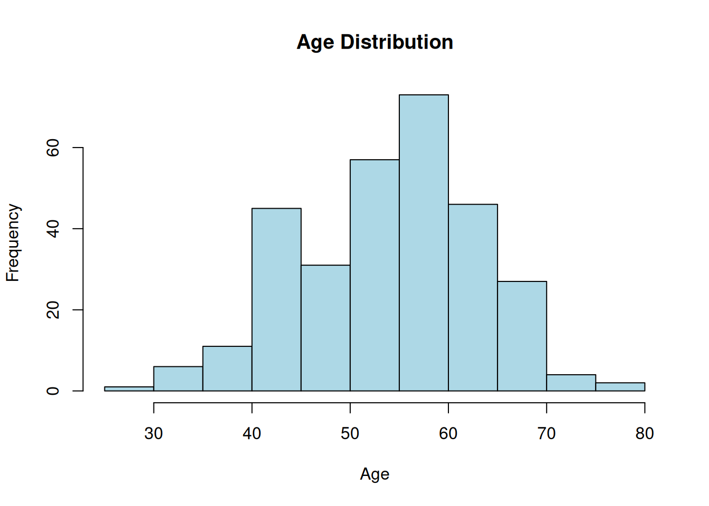
hist(complete_data$trestbps,
main = "Resting Blood Pressure Distribution",
xlab = "Blood Pressure (mm Hg)",
col = "lightgreen",
border = "black")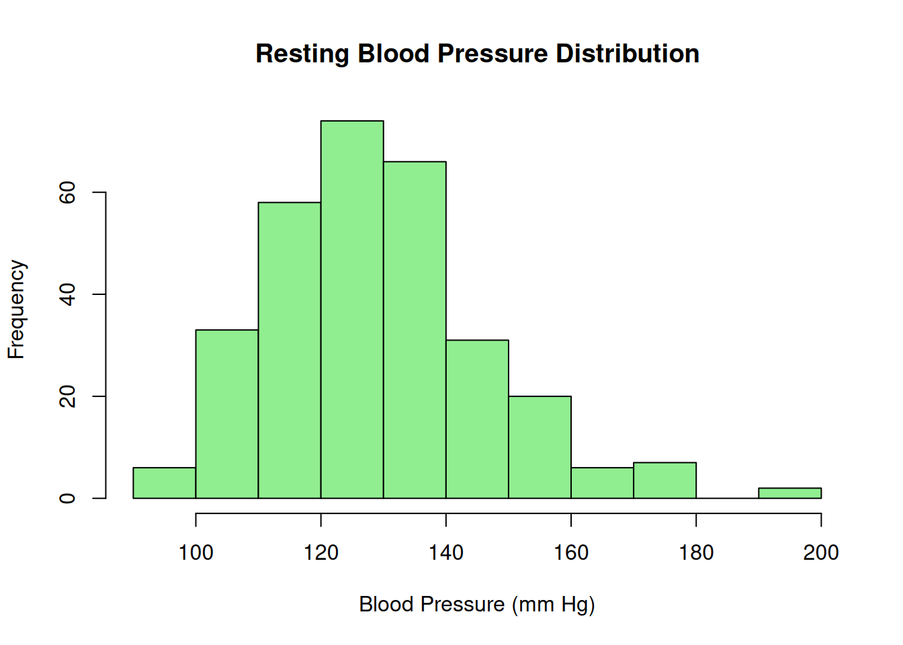
hist(complete_data$chol,
main = "Cholesterol Distribution",
xlab = "Cholesterol (mg/dl)",
col = "orange",
border = "black")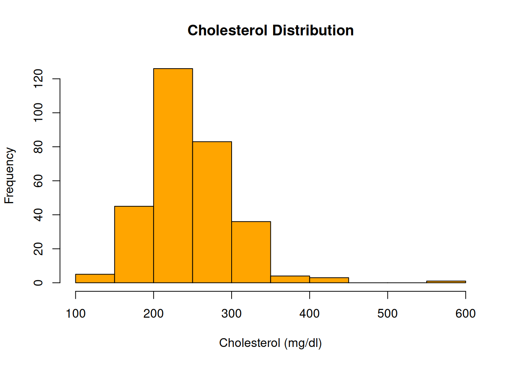
hist(complete_data$thalach,
main = "Max Heart Rate Distribution",
xlab = "Heart Rate (bpm)",
col = "purple",
border = "black")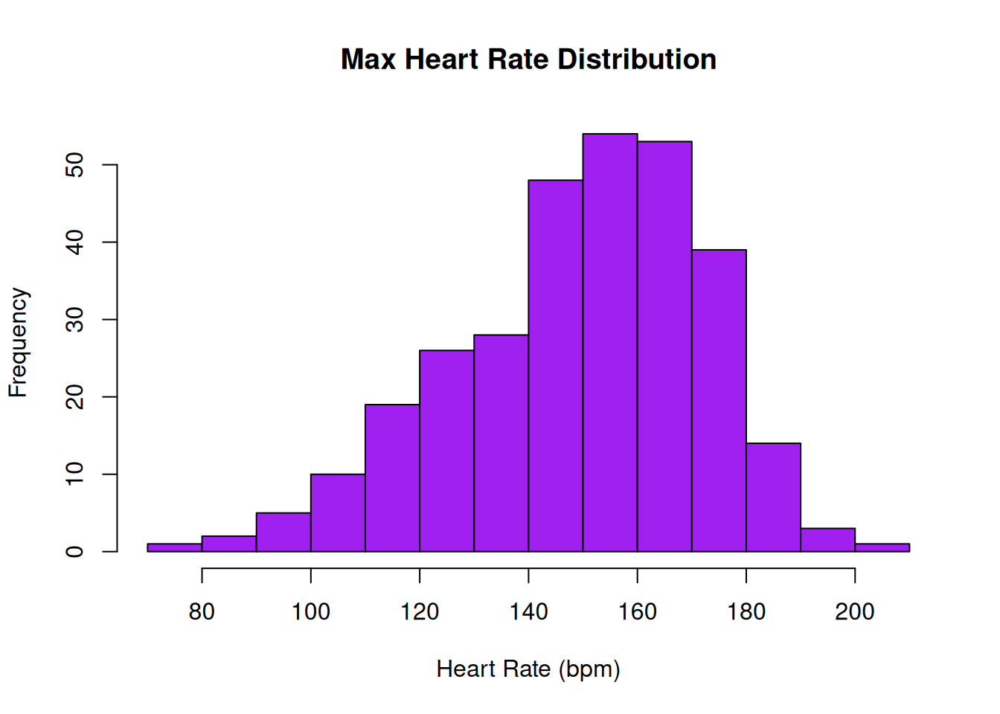
plot(density(complete_data$oldpeak, na.rm = TRUE),
main = "Density of ST Depression (Oldpeak)",
xlab = "Oldpeak",
col = "red",
lwd = 2)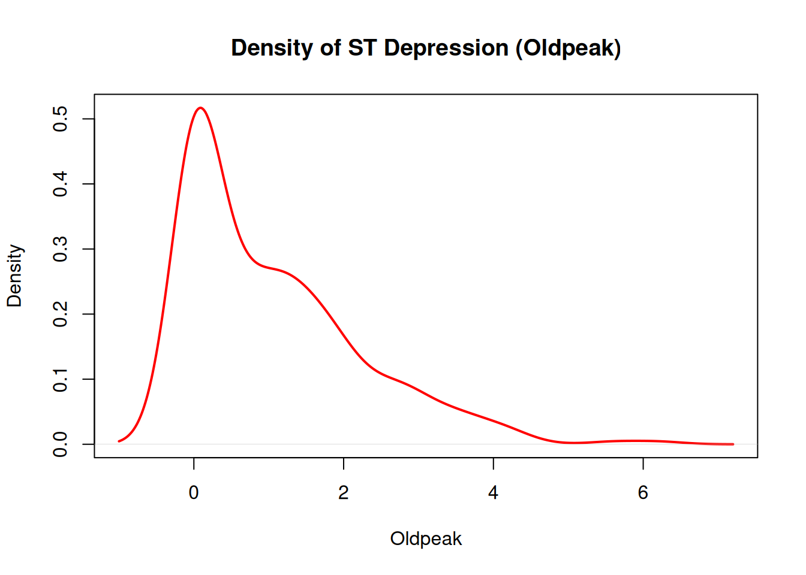
#Barplots for categorical variables that show the frequency of each category
barplot(table(complete_data$sex),
main = "Sex Distribution",
xlab = "Sex (1 = Male, 0 = Female)",
ylab = "Frequency",
col = "lightblue")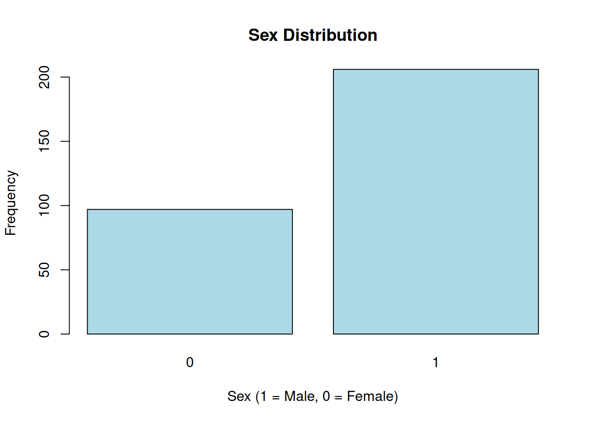
barplot(table(complete_data$cp),
main = "Chest Pain Type Distribution",
xlab = "Chest Pain Type",
ylab = "Frequency",
col = "lightgreen")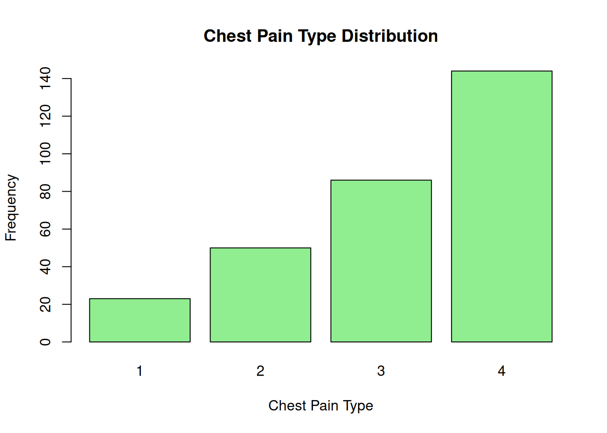
barplot(table(complete_data$fbs),
main = "Fasting Blood Sugar Distribution",
xlab = "Fasting Blood Sugar (>120 mg/dl)",
ylab = "Frequency",
col = "orange")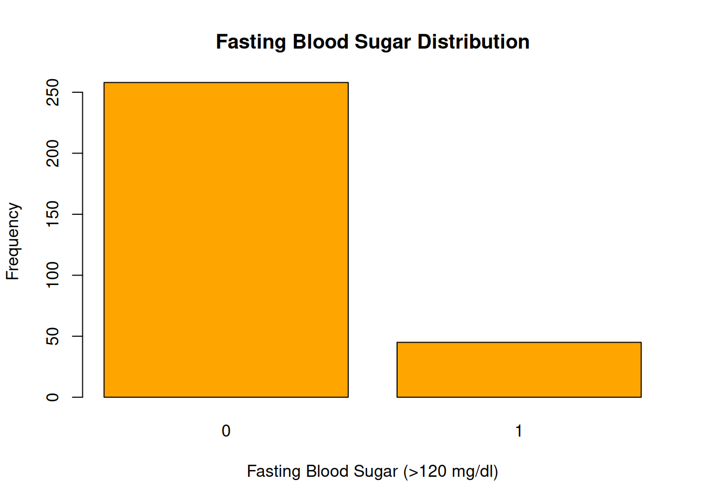
barplot(table(complete_data$restecg),
main = "Resting ECG Distribution",
xlab = "Resting ECG",
ylab = "Frequency",
col = "purple")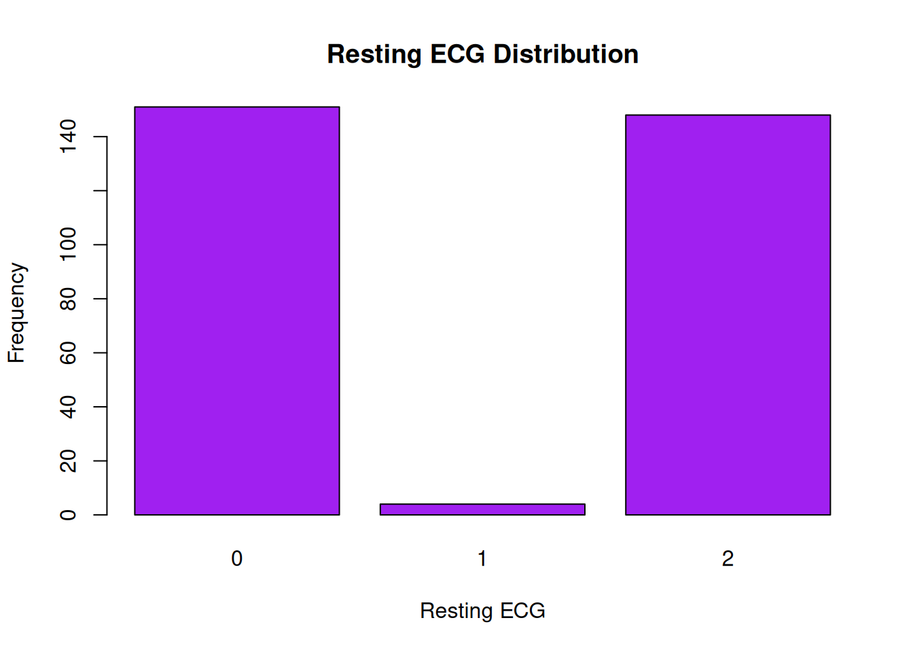
barplot(table(complete_data$exang),
main = "Exercise-Induced Angina Distribution",
xlab = "Exercise-Induced Angina (1 = Yes, 0 = No)",
ylab = "Frequency",
col = "red")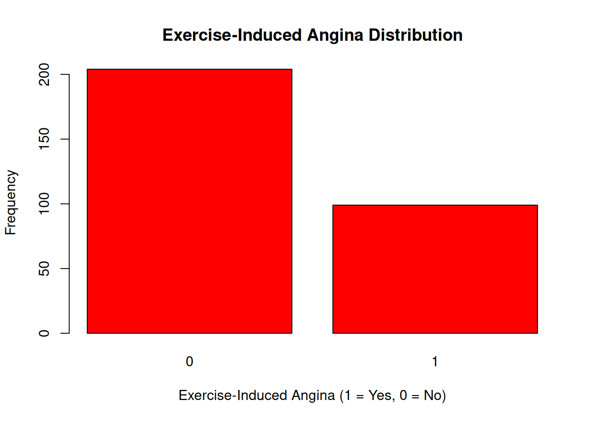
barplot(table(complete_data$slope),
main = "Slope of Peak Exercise Distribution",
xlab = "Slope",
ylab = "Frequency",
col = "cyan")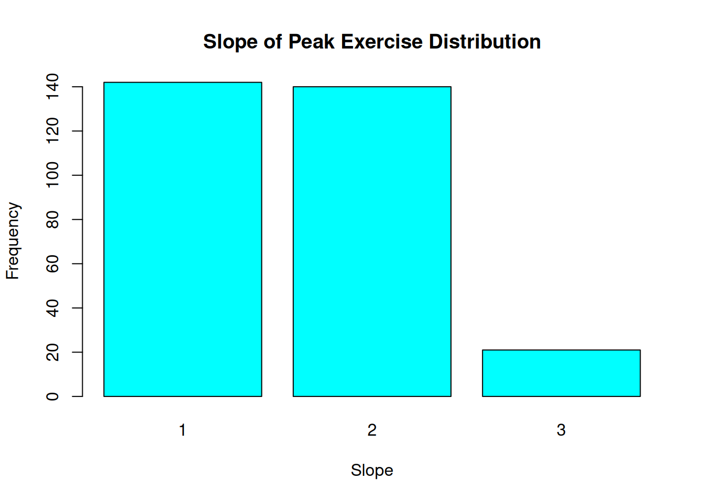
barplot(table(complete_data$ca),
main = "Number of Major Vessels Distribution",
xlab = "Number of Vessels",
ylab = "Frequency",
col = "pink")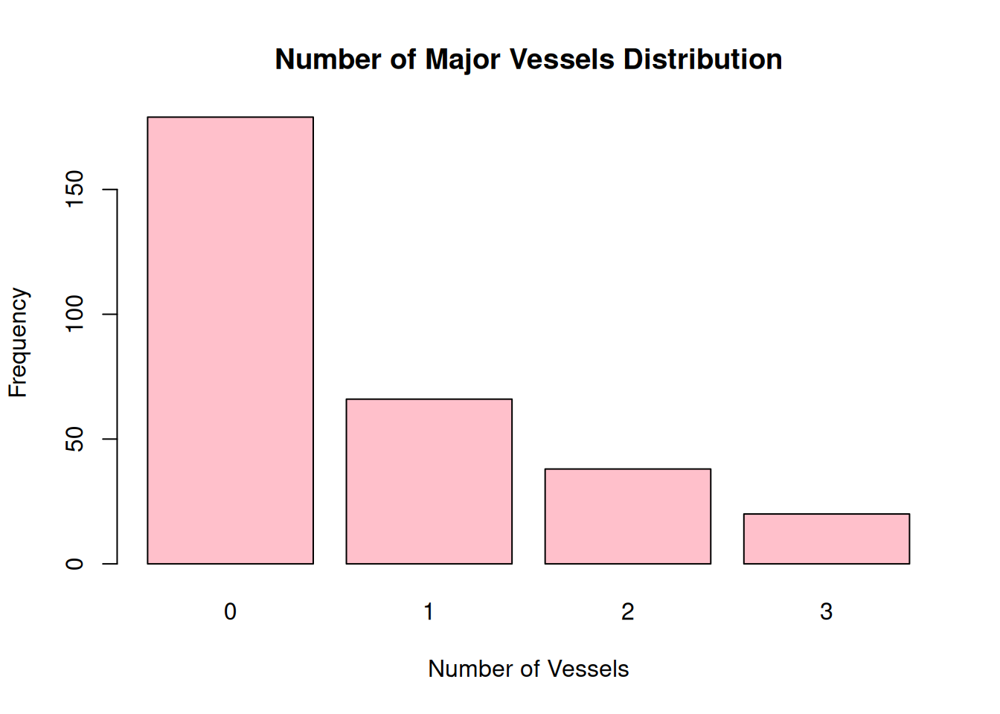
barplot(table(complete_data$thal),
main = "Thalassemia Distribution",
xlab = "Thalassemia",
ylab = "Frequency",
col = "purple")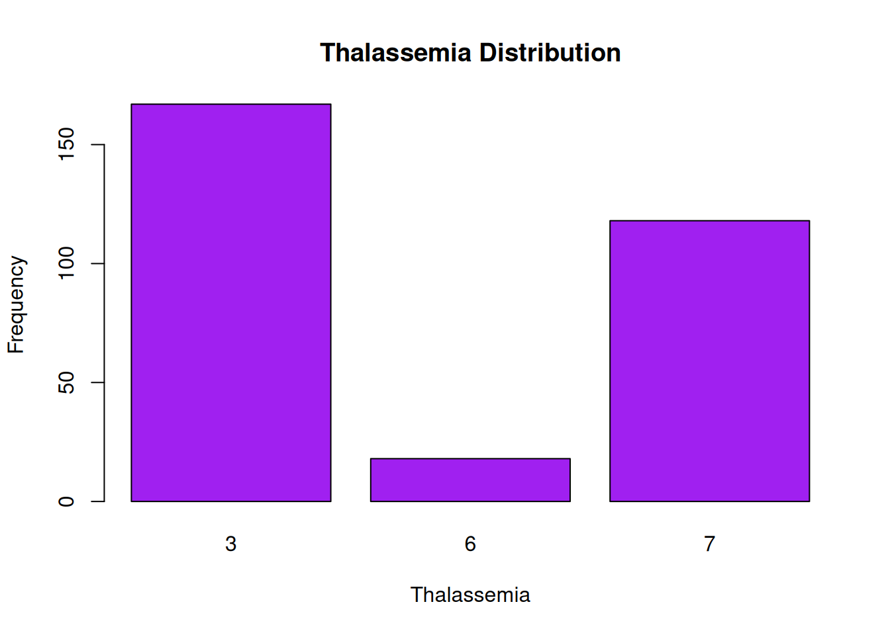
barplot(table(complete_data$num),
main = "Disease Outcome Distribution",
xlab = "Disease Outcome",
ylab = "Frequency",
col = "orange")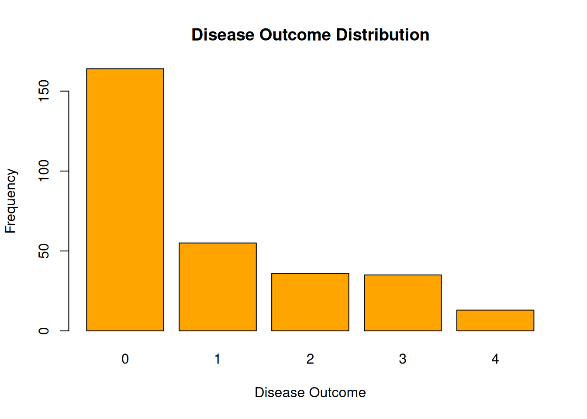
Insights from the Exploratory Data Analysis (EDA)
The EDA on the heart disease dataset involved preprocessing, handling missing values, and visualizing key attributes to understand their distributions. The dataset was cleaned by converting categorical variables into factors, imputing missing values using the mice package, and checking for duplicates.
Key Insights: Age Distribution: The dataset primarily consists of middle-aged individuals, with most patients between 50 and 60 years old. Blood Pressure & Cholesterol: Resting blood pressure is mostly between 100 and 140 mm Hg, while cholesterol levels show a right-skewed distribution, with many values between 200-300 mg/dL and some extreme cases. Max Heart Rate: The majority of patients have a max heart rate between 120 and 170 bpm, which follows a near-normal distribution. Chest Pain Types: Most patients experience asymptomatic chest pain (type 4), indicating that many do not have typical angina symptoms. Fasting Blood Sugar & ECG: Most patients have normal fasting blood sugar, and ECG results show that normal readings (category 0) are the most common. Number of Major Vessels & Disease Outcome: The majority of patients have no major vessels affected (ca = 0), and most do not have severe heart disease (num = 0), making it an imbalanced dataset.
1.2. Create visualizations in order to show which variables seem to be more associated with heart disease
#num variable represents heart disease outcomes and thus we can analyze how each variable relates to it
library(ggplot2)
#Sex vs. Heart Disease
ggplot(complete_data, aes(x = factor(sex), fill = factor(num))) +
geom_bar(position = "fill") +
labs(title = "Proportion of Heart Disease by Sex",
x = "Sex (1 = Male, 0 = Female)",
y = "Proportion",
fill = "Heart Disease") +
theme_minimal()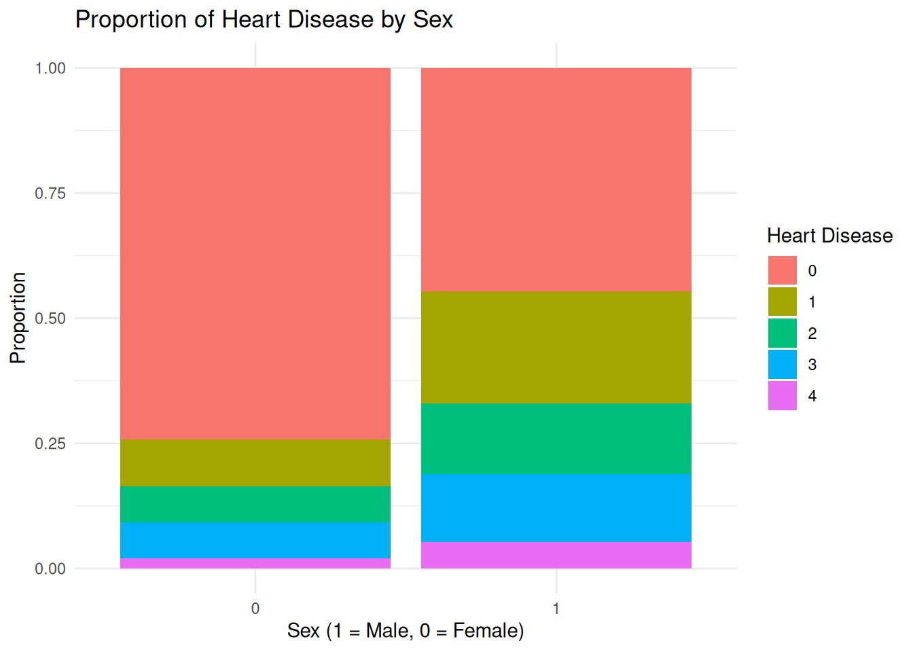
#Chest pain type vs. Heart Disease
ggplot(complete_data, aes(x = factor(cp), fill = factor(num))) +
geom_bar(position = "fill") +
labs(title = "Proportion of Heart Disease by Chest Pain Type",
x = "Chest Pain Type",
y = "Proportion",
fill = "Heart Disease") +
theme_minimal()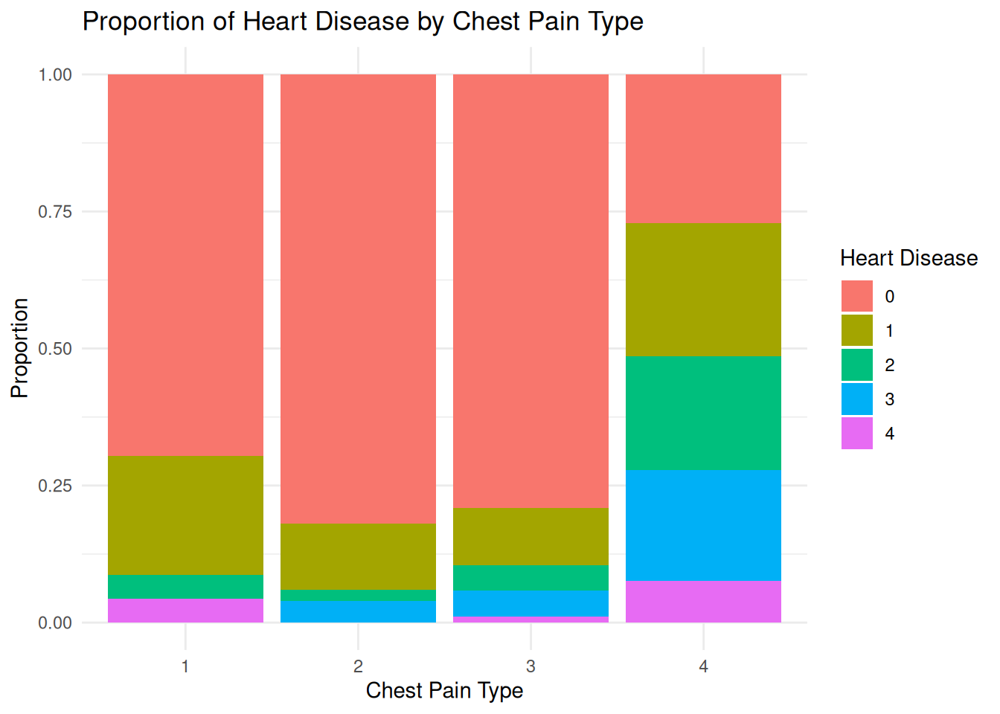
#Numeric variables
#Age vs. Heart Disease
ggplot(complete_data, aes(x = factor(num), y = age, fill = factor(num))) +
geom_boxplot() +
labs(title = "Age Distribution by Heart Disease Status",
x = "Heart Disease Status",
y = "Age",
fill = "Heart Disease") +
theme_minimal()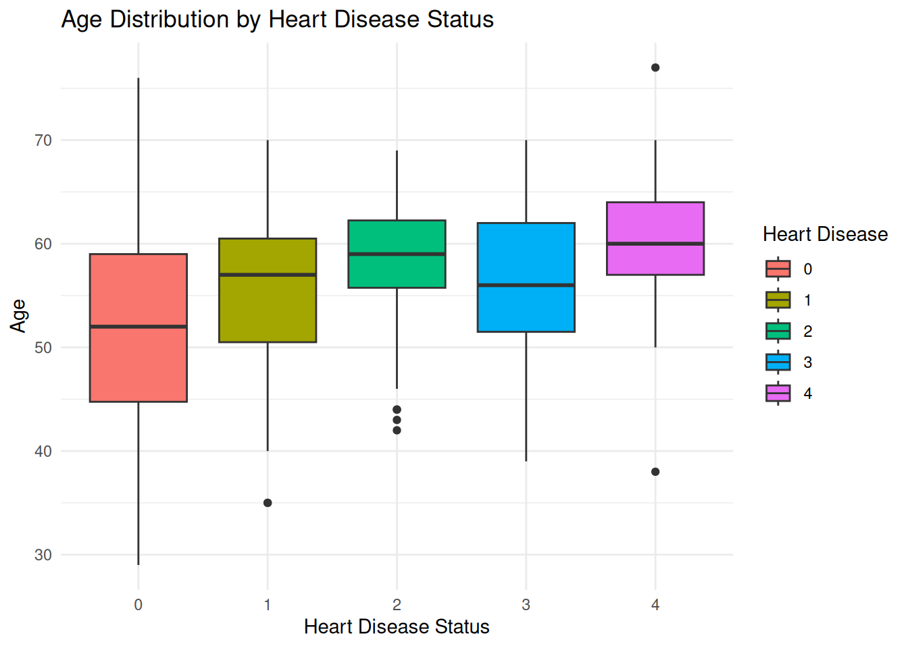
#Cholesterol vs. Heart Disease
ggplot(complete_data, aes(x = factor(num), y = chol, fill = factor(num))) +
geom_boxplot() +
labs(title = "Cholesterol Levels by Heart Disease Status",
x = "Heart Disease Status",
y = "Cholesterol",
fill = "Heart Disease") +
theme_minimal()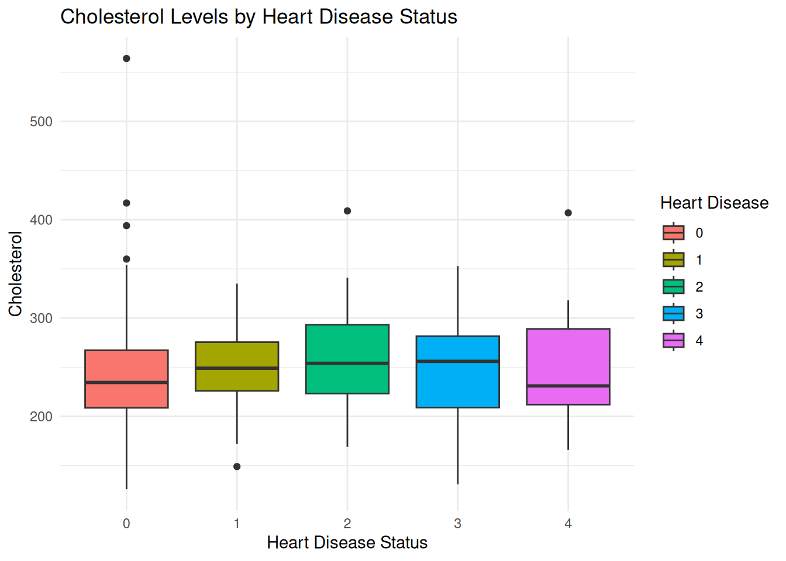
#Maximum Heart Rate vs. Heart Disease
ggplot(complete_data, aes(x = factor(num), y = thalach, fill = factor(num))) +
geom_boxplot() +
labs(title = "Max Heart Rate by Heart Disease Status",
x = "Heart Disease Status",
y = "Max Heart Rate",
fill = "Heart Disease") +
theme_minimal()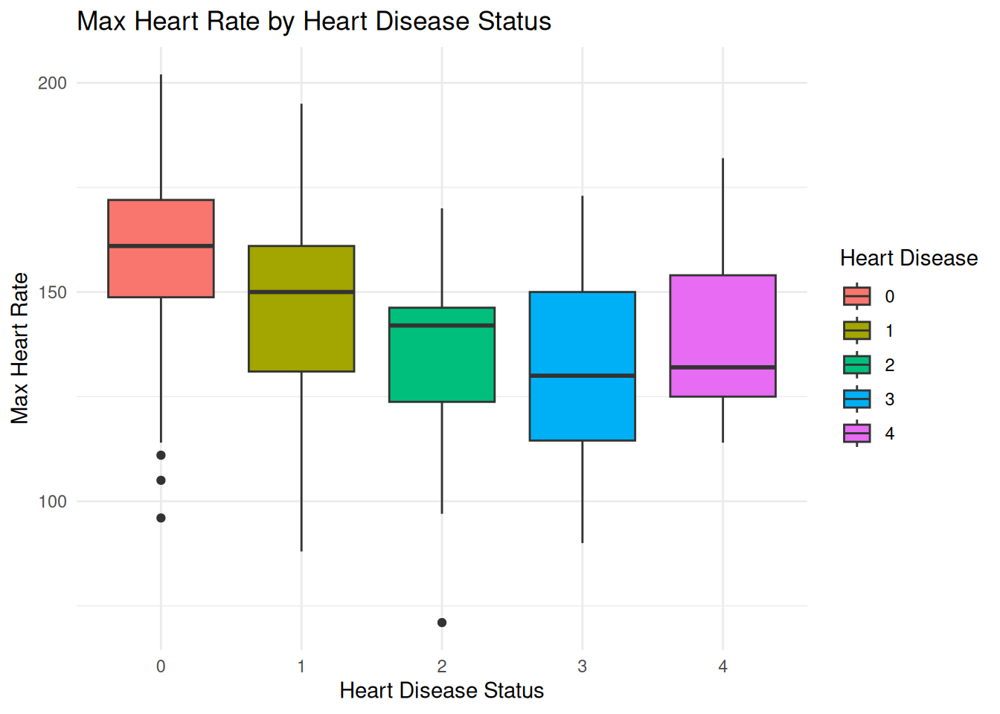
#Correlation Analysis
cor_matrix <- cor(complete_data[, sapply(complete_data, is.numeric)])
cor_with_disease <- cor_matrix["num", ]
print(cor_with_disease) age sex cp trestbps chol fbs
0.22285342 0.22446851 0.40707542 0.15775408 0.07090876 0.05918609
restecg thalach exang oldpeak slope num
0.18369635 -0.41504046 0.39705730 0.50409197 0.37795660 1.00000000
patient_id
0.02925623 barplot(abs(cor_with_disease[-which(names(cor_with_disease) == "num")]),
main = "Correlation with Heart Disease",
xlab = "Variables",
ylab = "Correlation Coefficient",
col = "blue",
las = 2)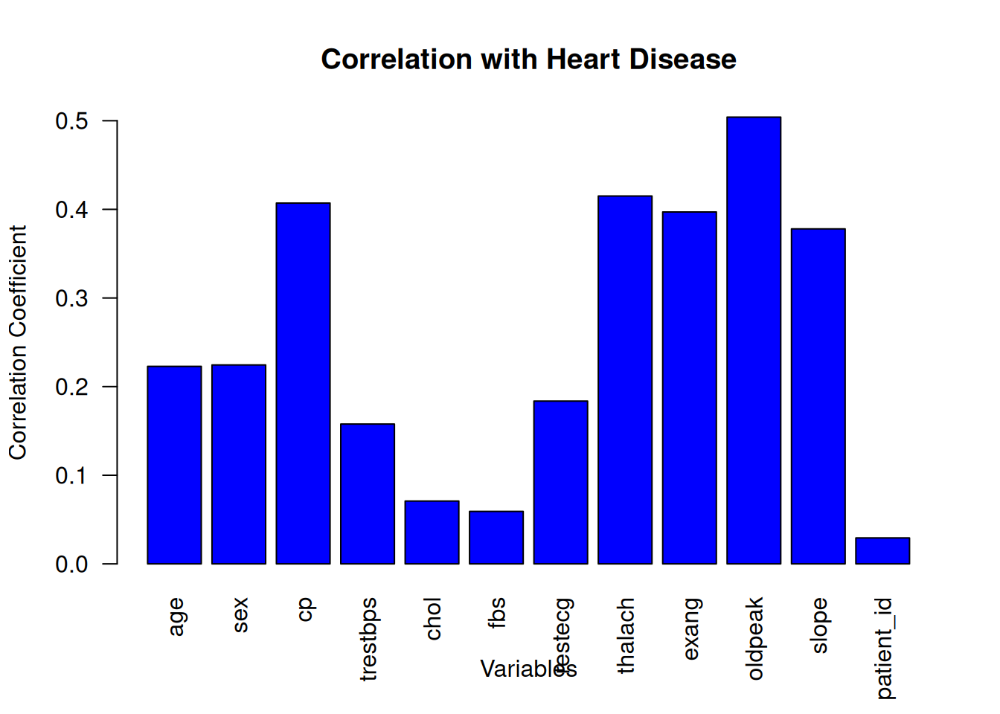
#The variables with the highest correlation are cp, oldpeak, exang, thalach, slope, ca, age in this order.
#They must be investigated more
#Violin plot for Max Heart Rate achieved vs. Heart Disease
ggplot(complete_data, aes(x = factor(num), y = thalach, fill = factor(num))) +
geom_violin(trim = FALSE) +
geom_boxplot(width = 0.1, outlier.color = "red", alpha = 0.5) +
labs(title = "Distribution of Max Heart Rate by Heart Disease Status",
x = "Heart Disease Status",
y = "Max Heart Rate") +
theme_minimal()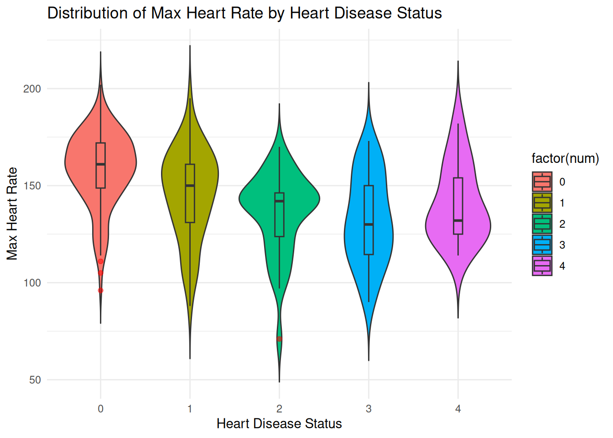
library(ggridges)
ggplot(complete_data, aes(x = oldpeak, y = factor(num), fill = factor(num))) +
geom_density_ridges(alpha = 0.7) +
labs(title = "Distribution of ST Depression by Heart Disease Status",
x = "ST Depression (Oldpeak)",
y = "Heart Disease Status",
fill = "Heart Disease") +
theme_minimal()Picking joint bandwidth of 0.504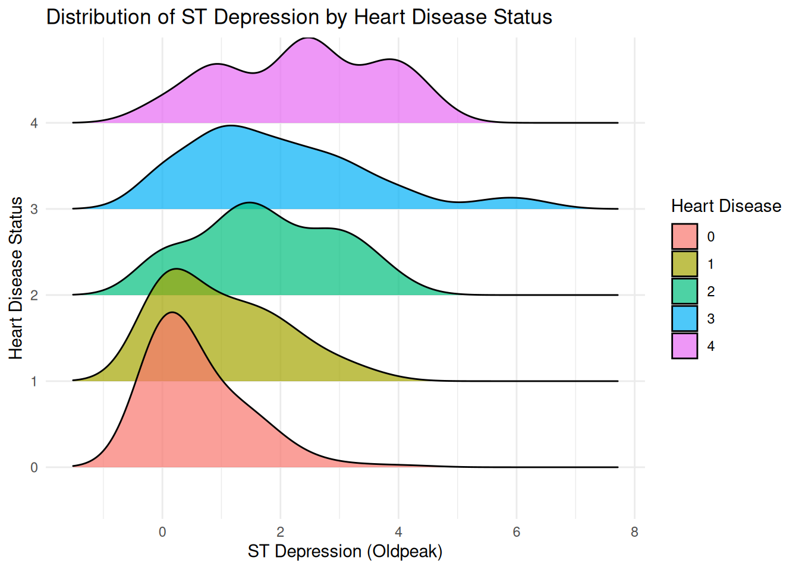
ggplot(complete_data, aes(x = oldpeak, y = thalach, color = factor(num))) +
geom_point(size = 2, alpha = 0.7) +
geom_density_2d() +
labs(title = "Max Heart Rate vs. ST Depression by Heart Disease Status",
x = "ST Depression (Oldpeak)",
y = "Max Heart Rate",
color = "Heart Disease Status") +
theme_minimal()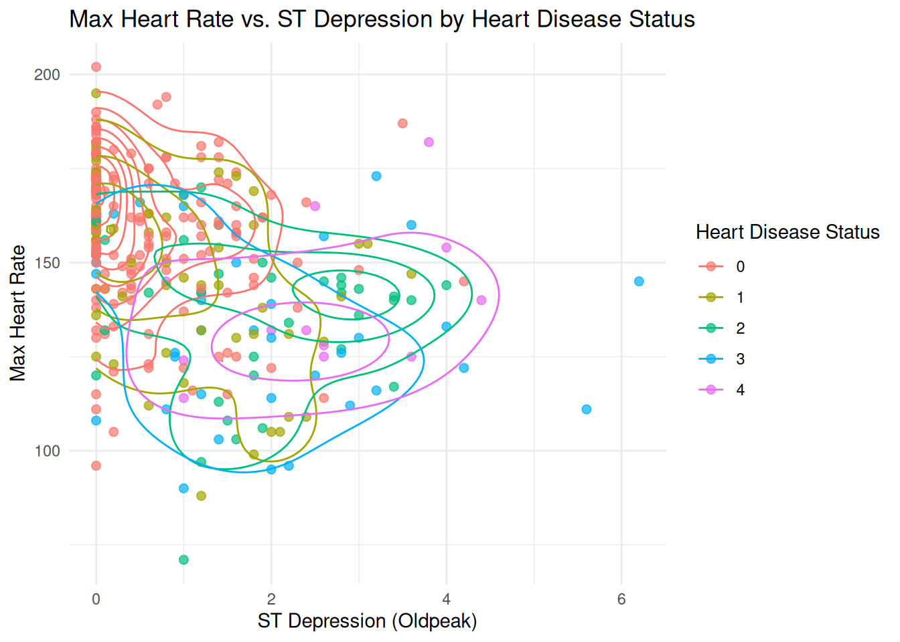
Registered S3 method overwritten by 'GGally':
method from
+.gg ggplot2ggpairs(complete_data,
columns = c("age", "trestbps", "chol", "thalach", "oldpeak"),
aes(color = factor(num), alpha = 0.7)) +
theme_minimal() +
labs(title = "Pairwise Relationships by Heart Disease Status")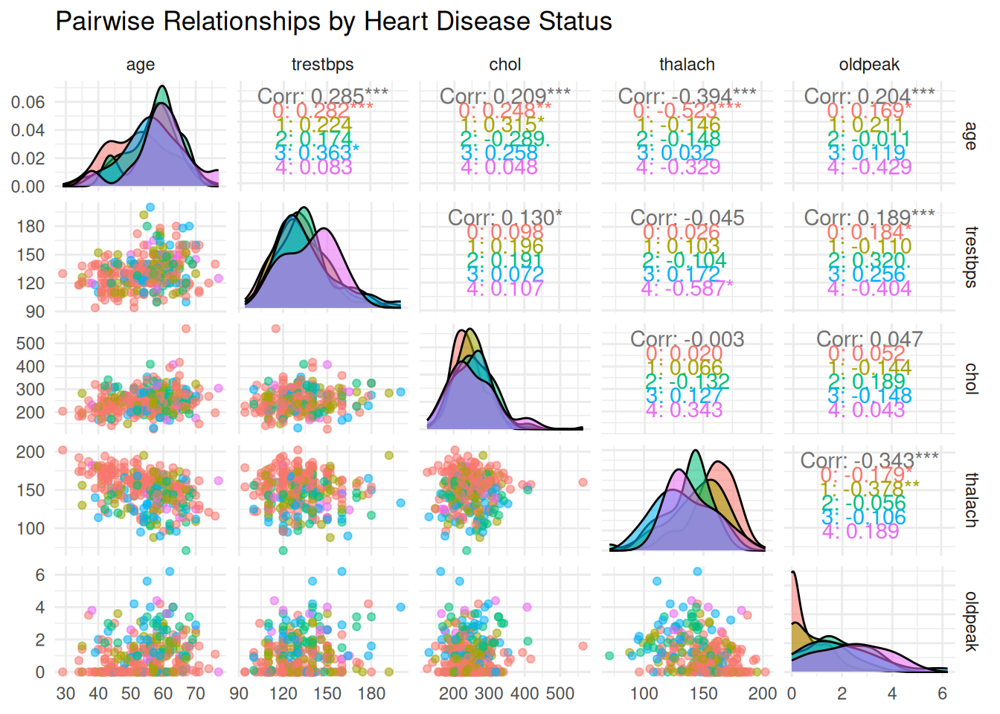
#Conditional Density for Age
ggplot(complete_data, aes(x = age, fill = factor(num))) +
geom_density(alpha = 0.6) +
labs(title = "Age Distribution by Heart Disease Status",
x = "Age",
y = "Density",
fill = "Heart Disease Status") +
theme_minimal()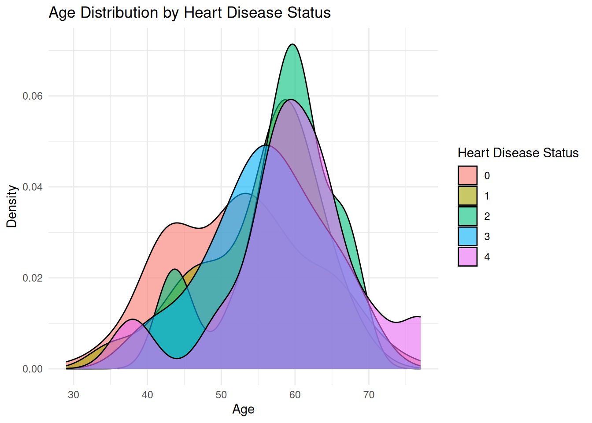
corrplot 0.95 loadedcor_matrix <- cor(complete_data[, c("age", "trestbps", "chol", "thalach", "oldpeak")],
use = "complete.obs")
corrplot(cor_matrix, method = "color", addCoef.col = "black", tl.col = "black",
title = "Correlation Between Variables")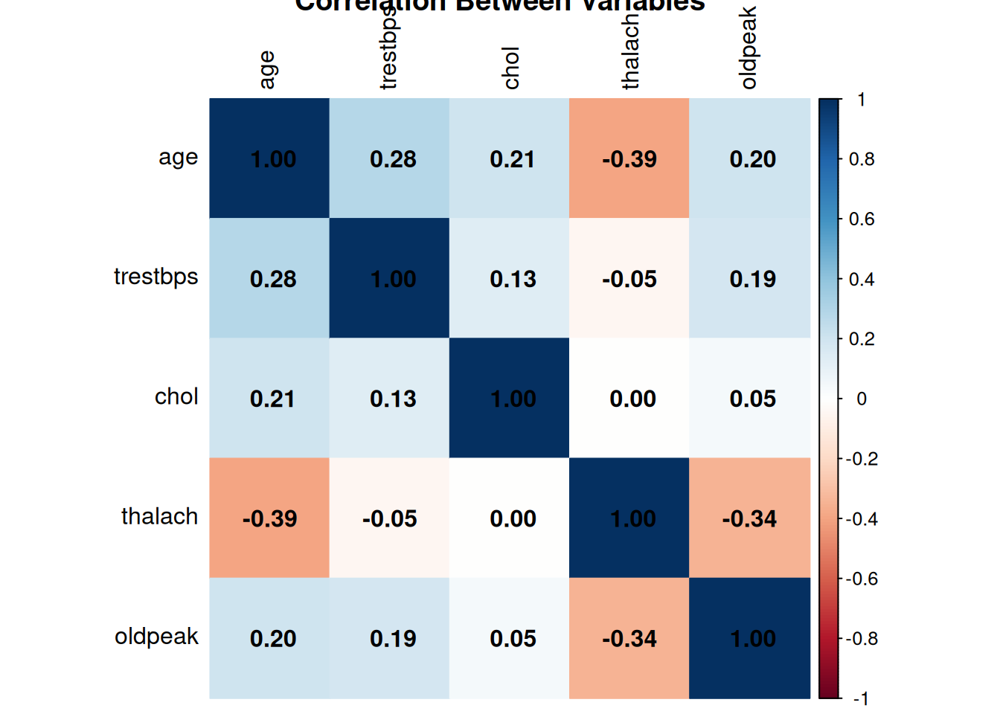
#Interaction Plot for oldpeak and thalach
library(interactions)
interaction_model <- lm(num ~ oldpeak * thalach, data = complete_data)
interact_plot(interaction_model, pred = oldpeak, modx = thalach,
modx.values = "terciles", plot.points = TRUE) +
labs(title = "Interaction Between ST Depression and Max Heart Rate",
x = "ST Depression (Oldpeak)",
y = "Heart Disease Probability")Medians of each tercile of thalach are 126, 154, 172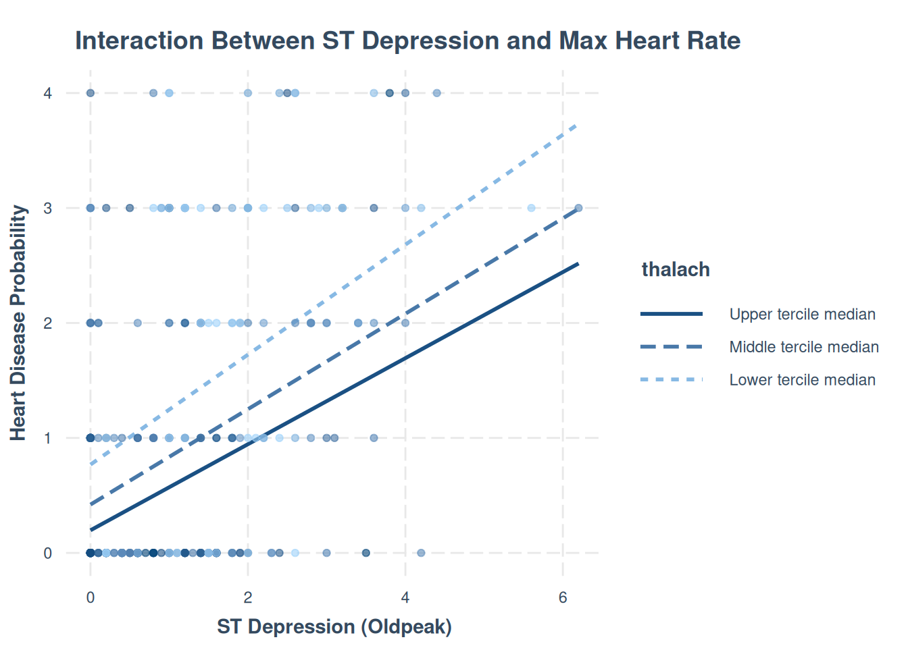
#PCA
library(ggfortify)
pca_model <- prcomp(complete_data[, sapply(complete_data, is.numeric)], center = TRUE, scale. = TRUE)
autoplot(pca_model, data = complete_data, colour = "num") +
labs(title = "PCA of Heart Disease Dataset",
x = "Principal Component 1",
y = "Principal Component 2",
color = "Heart Disease Status")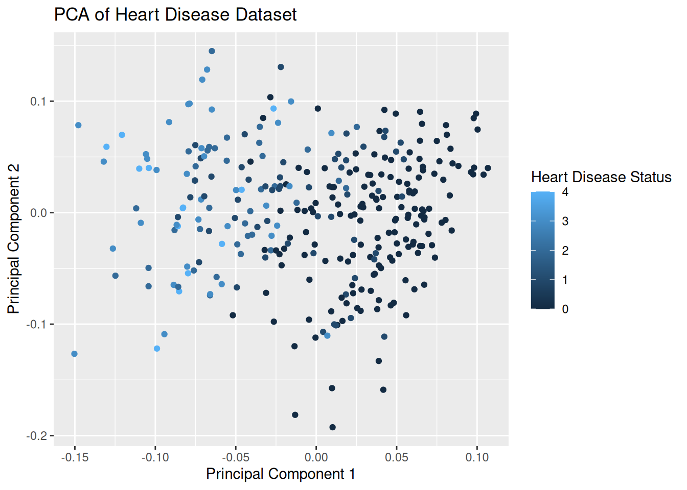
We created a big number of different plots in order to try and understand this dataset (some of them not so clear and matching with this data but we tried a lot just to understand).
Key Trends and Correlations with Heart Disease From all the visualizations and analyses, several strong trends emerge regarding factors most correlated with heart disease:
ST Depression (Oldpeak) is the strongest predictor
Higher oldpeak values (ST depression induced by exercise) are clearly associated with more severe heart disease. This makes sense because ST depression reflects ischemia, meaning that the heart is not getting enough oxygen during exertion. The interaction plots and scatterplots confirm that as oldpeak increases, the probability of heart disease rises, particularly when max heart rate is low.
Max Heart Rate (Thalach) is inversely correlated with heart disease
Patients with heart disease tend to have a lower max heart rate, while those without it reach higher heart rate levels. This makes sense physiologically, as a lower max heart rate indicates reduced cardiovascular efficiency and possible arterial blockages.
Chest Pain Type (CP) is highly associated with heart disease
Patients with asymptomatic chest pain (type 4) have the highest proportion of heart disease cases. Meanwhile, those with typical angina (type 1) have the lowest risk.
Exercise-Induced Angina (Exang) is another key predictor
Patients who experience exercise-induced angina are far more likely to have heart disease.
The Slope of the ST Segment (Slope) provides additional predictive power
Patients with a flat or downsloping ST segment (slope = 2 or 3) tend to have more severe heart disease. A downsloping ST segment is often a marker of ischemia and poor prognosis, making it an important feature in diagnostics.
Age is moderately correlated with heart disease severity
Older individuals tend to have higher disease severity, but some younger patients also show heart disease presence. This suggests that while age is a risk factor, it is not a definitive indicator—lifestyle, genetics, and other health conditions also play roles.
Cholesterol and Resting Blood Pressure (Trestbps) show weak correlation
Despite being common risk factors for cardiovascular disease, cholesterol and blood pressure do not strongly correlate with heart disease presence in this dataset. This could be due to the fact that cholesterol levels fluctuate based on diet and medication use, and resting blood pressure alone does not capture dynamic heart function under stress.
2. Difference in mortality rates in hospitalized COVID-19 patients
Using the supplementary material from the Difference in mortality rates in hospitalized COVID-19 patients identified by cytokine profile clustering using a machine learning approach: An outcome prediction alternative, perform the following tasks
2.1. Reproduce Figure 1 from the publication
Loading required package: grid========================================
ComplexHeatmap version 2.22.0
Bioconductor page: http://bioconductor.org/packages/ComplexHeatmap/
Github page: https://github.com/jokergoo/ComplexHeatmap
Documentation: http://jokergoo.github.io/ComplexHeatmap-reference
If you use it in published research, please cite either one:
- Gu, Z. Complex Heatmap Visualization. iMeta 2022.
- Gu, Z. Complex heatmaps reveal patterns and correlations in multidimensional
genomic data. Bioinformatics 2016.
The new InteractiveComplexHeatmap package can directly export static
complex heatmaps into an interactive Shiny app with zero effort. Have a try!
This message can be suppressed by:
suppressPackageStartupMessages(library(ComplexHeatmap))
========================================
! pheatmap() has been masked by ComplexHeatmap::pheatmap(). Most of the arguments
in the original pheatmap() are identically supported in the new function. You
can still use the original function by explicitly calling pheatmap::pheatmap().
Attaching package: 'ComplexHeatmap'The following object is masked from 'package:pheatmap':
pheatmap
Attaching package: 'gridExtra'The following object is masked from 'package:dplyr':
combine
Attaching package: 'kableExtra'The following object is masked from 'package:dplyr':
group_rowslibrary(tidyr)
# library(knitr)
# Load clinical data from supplementary tables
clinical_data <- read_excel("data_article/Table 1.XLSX", skip=1)
# Check the structure of the data
str(clinical_data)tibble [214 × 18] (S3: tbl_df/tbl/data.frame)
$ ID : chr [1:214] "COAG-HSJD-001" "COAG-HSJD-002" "COAG-HSJD-003" "COAG-HSJD-004" ...
$ Age : num [1:214] 63 52 74 78 58 58 69 74 51 72 ...
$ Gender : chr [1:214] "F" "M" "M" "M" ...
$ BMI : chr [1:214] "NI" "NI" "25.8" "33.1" ...
$ Syntoms onset : chr [1:214] "44040" "44041" "NI" "44026" ...
$ Hospitalization date : chr [1:214] "44047" "44045" "44024" "44034" ...
$ Admission to ICU : chr [1:214] "No" "No" "Yes" "Yes" ...
$ Days in ICU : chr [1:214] "0" "0" "10" "13" ...
$ ARDS Diagnosis : chr [1:214] "No" "Yes" "Yes" "Yes" ...
$ Days with ARDS : chr [1:214] "0" "4" "10" "19" ...
$ CRS Diagnosis : chr [1:214] "No" "No" "Yes" "Yes" ...
$ Days with CRS : chr [1:214] "0" "0" "10" "19" ...
$ Use of NIV : chr [1:214] "No" "Yes" "No" "Yes" ...
$ Days with NIV : chr [1:214] "0" "5" "0" "6" ...
$ Use of AMV : chr [1:214] "No" "No" "Yes" "Yes" ...
$ Days with AMV : num [1:214] 0 0 10 13 11 5 13 0 0 6 ...
$ Days of hospitalization: num [1:214] 8 5 10 19 12 16 26 25 6 6 ...
$ Death : chr [1:214] "No" "No" "Yes" "Yes" ...# A tibble: 6 × 18
ID Age Gender BMI `Syntoms onset` `Hospitalization date`
<chr> <dbl> <chr> <chr> <chr> <chr>
1 COAG-HSJD-001 63 F NI 44040 44047
2 COAG-HSJD-002 52 M NI 44041 44045
3 COAG-HSJD-003 74 M 25.8 NI 44024
4 COAG-HSJD-004 78 M 33.1 44026 44034
5 COAG-HSJD-005 58 M NI 44022 44032
6 COAG-HSJD-006 58 M NI 44023 44033
# ℹ 12 more variables: `Admission to ICU` <chr>, `Days in ICU` <chr>,
# `ARDS Diagnosis` <chr>, `Days with ARDS` <chr>, `CRS Diagnosis` <chr>,
# `Days with CRS` <chr>, `Use of NIV` <chr>, `Days with NIV` <chr>,
# `Use of AMV` <chr>, `Days with AMV` <dbl>, `Days of hospitalization` <dbl>,
# Death <chr># Convert Death column to binary (0 = No, 1 = Yes)
clinical_data$Death <- ifelse(clinical_data$Death == "Yes", 1, 0)
# Convert categorical variables to factors
clinical_data$Gender <- factor(clinical_data$Gender, levels = c("M", "F"))
clinical_data$`Admission to ICU` <- factor(clinical_data$`Admission to ICU`, levels = c("No", "Yes"))
clinical_data$`ARDS Diagnosis` <- factor(clinical_data$`ARDS Diagnosis`, levels = c("No", "Yes"))
# Create Clinical Classification (G1-G4)
clinical_data$Group <- with(clinical_data, ifelse(
`ARDS Diagnosis` == "No" & `Use of AMV` == "No" & `Use of NIV` == "No", "G1",
ifelse(`ARDS Diagnosis` == "No" & `Use of AMV` != "No", "G2",
ifelse(`ARDS Diagnosis` == "Yes" & `Use of AMV` == "No", "G3", "G4")
)
))
# Convert Group to factor
clinical_data$Group <- factor(clinical_data$Group, levels = c("G1", "G2", "G3", "G4"))
# Load necessary library
library(gridExtra)
# Set up layout for 4 panels (A, B, C, D)
layout(matrix(c(1, 2, 3, 4), ncol = 2, byrow = TRUE), widths = c(2, 2), heights = c(2, 2))
par(mar = c(5, 5, 3, 2))
# ------------------- PANEL A: Age Distribution (Histogram) -------------------
hist(clinical_data$Age,
breaks = seq(20, 100, by = 10),
col = "#e0edec",
border = "black",
main = "Age",
xlab = "Age (years)",
ylab = "Frequency (n)",
axes = TRUE)
# ------------------- PANEL B: Clinical Classification Table -------------------
par(mar = c(0, 0, 0, 0)) # Remove margins
plot.new() # Create blank plot area
# Add small title
title(xlab = expression(bold("Definition of the clinical classification")),
line = -12.5, adj = 0.5, cex.lab = 1.2)
# Define table content
table_content <- as.matrix(data.frame(
"Clinical\nClassification" = c("G1", "G2", "G3", "G4"),
NIV = c("−", "−/+", "+", "−/+"),
AMV = c("−", "+/−", "−", "+"),
ARDS = c("−", "−", "+", "+"),
check.names = FALSE # Prevents automatic conversion of spaces to underscores
))
# Define table styling
table_theme <- ttheme_default(
colhead = list(
bg_params = list(fill = "#d1d0d0"), # Darker gray for column headers
fg_params = list(fontface = "bold") # Bold for column headers
),
colhead = list(
fg_params = list(fontface = "bold", fontsize = 6) # Smaller and bold font for column headers
)
)
# Force table into upper-right panel
vp <- viewport(x = 0.52, y = 1.1, width = 0.5, height = 0.8, just = c("left", "top"))
pushViewport(vp)
grid.table(table_content, theme = table_theme)
popViewport()
# ------------------- PANEL C: Clinical Classification Barplot -------------------
par(mar = c(5, 5, 3, 2))
group_counts <- table(clinical_data$Group)
bar_colors <- c("#96d0cb", "#f7f5b5", "#b9b9dc", "#e98f80")
bp <- barplot(group_counts,
col = bar_colors,
border = "black",
ylim = c(0, 80),
main = "Clinical classification",
ylab = "Frequency (n)",
xlab = "Clinical classification",
names.arg = c("G1", "G2", "G3", "G4"))
# Add numbers above bars
text(bp, group_counts + 3, labels = group_counts, cex = 1)
# ------------------- PANEL D: Vital Status Barplot -------------------
death_counts <- table(clinical_data$Death)
bp <- barplot(death_counts,
col = c("#96d0cb", "#f7f5b5"),
border = "black",
ylim = c(0, 160),
main = "Vital status",
ylab = "Frequency (n)",
xlab="Death",
names.arg = c("No", "Yes"))
# Add numbers directly above bars
text(bp, death_counts + 5, labels = death_counts, cex = 1) 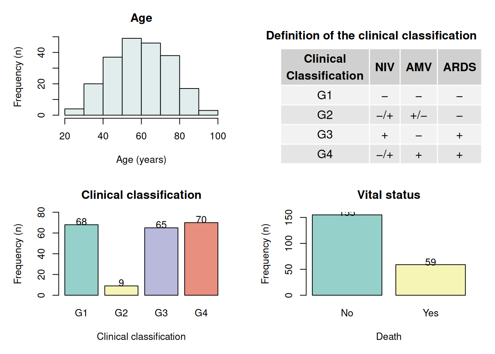
I tried my best, but I really don’t know how to center the table and make it look correct because it has a fixed size while the plots adjust wheher n we move in and out. I think the easiest approach would be to create the separate plots and the table and merge them with another tool.
2.2. Reproduce Figure 2 from the publication but instead of representing the clusters in the annotation, represent the groups (G1 to G4)
2.2.1. Loading and cleaning the data
========================================
circlize version 0.4.16
CRAN page: https://cran.r-project.org/package=circlize
Github page: https://github.com/jokergoo/circlize
Documentation: https://jokergoo.github.io/circlize_book/book/
If you use it in published research, please cite:
Gu, Z. circlize implements and enhances circular visualization
in R. Bioinformatics 2014.
This message can be suppressed by:
suppressPackageStartupMessages(library(circlize))
========================================New names:
• `` -> `...1`If we take a look at the data we will see that we have many missing values on the first columns (ID), that is because if we have more than one measure, taken in different days, only the first measure has the ID. So we want fill the missing IDs with the last non-missing value. We can do so with the function fill() from the package tidyr.
Afterwards, the investigators performed the clustering using the data from 13 cytokines: IL-1 beta, IL-6, IL-8, IL-10, IL-17, TNF, IFNalpha, IFN-gamma, CXCL10, CCL2, CCL3, G-CSF and IL-38. However on the data-set and the image IL-17 is missing.
Additionally, we have missing values, marked as NI, so we want to change them to NA.
Finally, now some patients have many cytokines values, which we don’t want. According to the article, only the median value of each cytokine or laboratory parameter was considered to compare patients. So we will do the same. To do so we will transform our data-set to a long format, using pivot_longer(), which will contains the IDs and Day as normal and the cytokine name. Then we will make sure all the measurements are numeric and finally we will perform the mean.
colnames(clinical_data_2)[1] <- "ID"
clinical_data_2 <- clinical_data_2 |>
fill(ID, .direction = "down")
clinical_data_2[clinical_data_2 == "NI"] <- NA
clinical_data_2 <- clinical_data_2[, 1:14]
long_clinical_data_2 <- clinical_data_2 |>
pivot_longer(
cols = c(-ID, -Day),
names_to = "Cytokine",
values_to = "Measurement"
)
long_clinical_data_2$Measurement <- as.numeric(long_clinical_data_2$Measurement)Warning: NAs introduced by coercionaverage_clinical_data_2 <- long_clinical_data_2 |>
group_by(ID, Cytokine) |>
summarise(Mean_Measurement = mean(Measurement, na.rm = TRUE), .groups = "drop")
final_clinical_data_2 <- average_clinical_data_2 |>
pivot_wider(
names_from = Cytokine,
values_from = Mean_Measurement
)
final_clinical_data_2 <- as.data.frame(final_clinical_data_2)
dim(final_clinical_data_2)[1] 194 13Now we have a data-set that is almost like the one the investigators used, with 194 patients as the rows and 12 cytokines as columns instead of 13.
It is not mentioned if some sort of standardization was performed, on Figure 2 it says that median value for each cytokine was used to create profiles or clusters. Thus, we consider that we can use the values as they are currently.
However, there are some patients that lack IL-6 values, to avoid losing information, we will try to generate the data using the function mice().
iter imp variable
1 1 IL-6
1 2 IL-6
1 3 IL-6
1 4 IL-6
1 5 IL-6
2 1 IL-6
2 2 IL-6
2 3 IL-6
2 4 IL-6
2 5 IL-6
3 1 IL-6
3 2 IL-6
3 3 IL-6
3 4 IL-6
3 5 IL-6
4 1 IL-6
4 2 IL-6
4 3 IL-6
4 4 IL-6
4 5 IL-6
5 1 IL-6
5 2 IL-6
5 3 IL-6
5 4 IL-6
5 5 IL-6
6 1 IL-6
6 2 IL-6
6 3 IL-6
6 4 IL-6
6 5 IL-6
7 1 IL-6
7 2 IL-6
7 3 IL-6
7 4 IL-6
7 5 IL-6
8 1 IL-6
8 2 IL-6
8 3 IL-6
8 4 IL-6
8 5 IL-6
9 1 IL-6
9 2 IL-6
9 3 IL-6
9 4 IL-6
9 5 IL-6
10 1 IL-6
10 2 IL-6
10 3 IL-6
10 4 IL-6
10 5 IL-6
11 1 IL-6
11 2 IL-6
11 3 IL-6
11 4 IL-6
11 5 IL-6
12 1 IL-6
12 2 IL-6
12 3 IL-6
12 4 IL-6
12 5 IL-6
13 1 IL-6
13 2 IL-6
13 3 IL-6
13 4 IL-6
13 5 IL-6
14 1 IL-6
14 2 IL-6
14 3 IL-6
14 4 IL-6
14 5 IL-6
15 1 IL-6
15 2 IL-6
15 3 IL-6
15 4 IL-6
15 5 IL-6
16 1 IL-6
16 2 IL-6
16 3 IL-6
16 4 IL-6
16 5 IL-6
17 1 IL-6
17 2 IL-6
17 3 IL-6
17 4 IL-6
17 5 IL-6
18 1 IL-6
18 2 IL-6
18 3 IL-6
18 4 IL-6
18 5 IL-6
19 1 IL-6
19 2 IL-6
19 3 IL-6
19 4 IL-6
19 5 IL-6
20 1 IL-6
20 2 IL-6
20 3 IL-6
20 4 IL-6
20 5 IL-6
21 1 IL-6
21 2 IL-6
21 3 IL-6
21 4 IL-6
21 5 IL-6
22 1 IL-6
22 2 IL-6
22 3 IL-6
22 4 IL-6
22 5 IL-6
23 1 IL-6
23 2 IL-6
23 3 IL-6
23 4 IL-6
23 5 IL-6
24 1 IL-6
24 2 IL-6
24 3 IL-6
24 4 IL-6
24 5 IL-6
25 1 IL-6
25 2 IL-6
25 3 IL-6
25 4 IL-6
25 5 IL-6
26 1 IL-6
26 2 IL-6
26 3 IL-6
26 4 IL-6
26 5 IL-6
27 1 IL-6
27 2 IL-6
27 3 IL-6
27 4 IL-6
27 5 IL-6
28 1 IL-6
28 2 IL-6
28 3 IL-6
28 4 IL-6
28 5 IL-6
29 1 IL-6
29 2 IL-6
29 3 IL-6
29 4 IL-6
29 5 IL-6
30 1 IL-6
30 2 IL-6
30 3 IL-6
30 4 IL-6
30 5 IL-6
31 1 IL-6
31 2 IL-6
31 3 IL-6
31 4 IL-6
31 5 IL-6
32 1 IL-6
32 2 IL-6
32 3 IL-6
32 4 IL-6
32 5 IL-6
33 1 IL-6
33 2 IL-6
33 3 IL-6
33 4 IL-6
33 5 IL-6
34 1 IL-6
34 2 IL-6
34 3 IL-6
34 4 IL-6
34 5 IL-6
35 1 IL-6
35 2 IL-6
35 3 IL-6
35 4 IL-6
35 5 IL-6
36 1 IL-6
36 2 IL-6
36 3 IL-6
36 4 IL-6
36 5 IL-6
37 1 IL-6
37 2 IL-6
37 3 IL-6
37 4 IL-6
37 5 IL-6
38 1 IL-6
38 2 IL-6
38 3 IL-6
38 4 IL-6
38 5 IL-6
39 1 IL-6
39 2 IL-6
39 3 IL-6
39 4 IL-6
39 5 IL-6
40 1 IL-6
40 2 IL-6
40 3 IL-6
40 4 IL-6
40 5 IL-6
41 1 IL-6
41 2 IL-6
41 3 IL-6
41 4 IL-6
41 5 IL-6
42 1 IL-6
42 2 IL-6
42 3 IL-6
42 4 IL-6
42 5 IL-6
43 1 IL-6
43 2 IL-6
43 3 IL-6
43 4 IL-6
43 5 IL-6
44 1 IL-6
44 2 IL-6
44 3 IL-6
44 4 IL-6
44 5 IL-6
45 1 IL-6
45 2 IL-6
45 3 IL-6
45 4 IL-6
45 5 IL-6
46 1 IL-6
46 2 IL-6
46 3 IL-6
46 4 IL-6
46 5 IL-6
47 1 IL-6
47 2 IL-6
47 3 IL-6
47 4 IL-6
47 5 IL-6
48 1 IL-6
48 2 IL-6
48 3 IL-6
48 4 IL-6
48 5 IL-6
49 1 IL-6
49 2 IL-6
49 3 IL-6
49 4 IL-6
49 5 IL-6
50 1 IL-6
50 2 IL-6
50 3 IL-6
50 4 IL-6
50 5 IL-6
51 1 IL-6
51 2 IL-6
51 3 IL-6
51 4 IL-6
51 5 IL-6
52 1 IL-6
52 2 IL-6
52 3 IL-6
52 4 IL-6
52 5 IL-6
53 1 IL-6
53 2 IL-6
53 3 IL-6
53 4 IL-6
53 5 IL-6
54 1 IL-6
54 2 IL-6
54 3 IL-6
54 4 IL-6
54 5 IL-6
55 1 IL-6
55 2 IL-6
55 3 IL-6
55 4 IL-6
55 5 IL-6
56 1 IL-6
56 2 IL-6
56 3 IL-6
56 4 IL-6
56 5 IL-6
57 1 IL-6
57 2 IL-6
57 3 IL-6
57 4 IL-6
57 5 IL-6
58 1 IL-6
58 2 IL-6
58 3 IL-6
58 4 IL-6
58 5 IL-6
59 1 IL-6
59 2 IL-6
59 3 IL-6
59 4 IL-6
59 5 IL-6
60 1 IL-6
60 2 IL-6
60 3 IL-6
60 4 IL-6
60 5 IL-6
61 1 IL-6
61 2 IL-6
61 3 IL-6
61 4 IL-6
61 5 IL-6
62 1 IL-6
62 2 IL-6
62 3 IL-6
62 4 IL-6
62 5 IL-6
63 1 IL-6
63 2 IL-6
63 3 IL-6
63 4 IL-6
63 5 IL-6
64 1 IL-6
64 2 IL-6
64 3 IL-6
64 4 IL-6
64 5 IL-6
65 1 IL-6
65 2 IL-6
65 3 IL-6
65 4 IL-6
65 5 IL-6
66 1 IL-6
66 2 IL-6
66 3 IL-6
66 4 IL-6
66 5 IL-6
67 1 IL-6
67 2 IL-6
67 3 IL-6
67 4 IL-6
67 5 IL-6
68 1 IL-6
68 2 IL-6
68 3 IL-6
68 4 IL-6
68 5 IL-6
69 1 IL-6
69 2 IL-6
69 3 IL-6
69 4 IL-6
69 5 IL-6
70 1 IL-6
70 2 IL-6
70 3 IL-6
70 4 IL-6
70 5 IL-6
71 1 IL-6
71 2 IL-6
71 3 IL-6
71 4 IL-6
71 5 IL-6
72 1 IL-6
72 2 IL-6
72 3 IL-6
72 4 IL-6
72 5 IL-6
73 1 IL-6
73 2 IL-6
73 3 IL-6
73 4 IL-6
73 5 IL-6
74 1 IL-6
74 2 IL-6
74 3 IL-6
74 4 IL-6
74 5 IL-6
75 1 IL-6
75 2 IL-6
75 3 IL-6
75 4 IL-6
75 5 IL-6
76 1 IL-6
76 2 IL-6
76 3 IL-6
76 4 IL-6
76 5 IL-6
77 1 IL-6
77 2 IL-6
77 3 IL-6
77 4 IL-6
77 5 IL-6
78 1 IL-6
78 2 IL-6
78 3 IL-6
78 4 IL-6
78 5 IL-6
79 1 IL-6
79 2 IL-6
79 3 IL-6
79 4 IL-6
79 5 IL-6
80 1 IL-6
80 2 IL-6
80 3 IL-6
80 4 IL-6
80 5 IL-6
81 1 IL-6
81 2 IL-6
81 3 IL-6
81 4 IL-6
81 5 IL-6
82 1 IL-6
82 2 IL-6
82 3 IL-6
82 4 IL-6
82 5 IL-6
83 1 IL-6
83 2 IL-6
83 3 IL-6
83 4 IL-6
83 5 IL-6
84 1 IL-6
84 2 IL-6
84 3 IL-6
84 4 IL-6
84 5 IL-6
85 1 IL-6
85 2 IL-6
85 3 IL-6
85 4 IL-6
85 5 IL-6
86 1 IL-6
86 2 IL-6
86 3 IL-6
86 4 IL-6
86 5 IL-6
87 1 IL-6
87 2 IL-6
87 3 IL-6
87 4 IL-6
87 5 IL-6
88 1 IL-6
88 2 IL-6
88 3 IL-6
88 4 IL-6
88 5 IL-6
89 1 IL-6
89 2 IL-6
89 3 IL-6
89 4 IL-6
89 5 IL-6
90 1 IL-6
90 2 IL-6
90 3 IL-6
90 4 IL-6
90 5 IL-6
91 1 IL-6
91 2 IL-6
91 3 IL-6
91 4 IL-6
91 5 IL-6
92 1 IL-6
92 2 IL-6
92 3 IL-6
92 4 IL-6
92 5 IL-6
93 1 IL-6
93 2 IL-6
93 3 IL-6
93 4 IL-6
93 5 IL-6
94 1 IL-6
94 2 IL-6
94 3 IL-6
94 4 IL-6
94 5 IL-6
95 1 IL-6
95 2 IL-6
95 3 IL-6
95 4 IL-6
95 5 IL-6
96 1 IL-6
96 2 IL-6
96 3 IL-6
96 4 IL-6
96 5 IL-6
97 1 IL-6
97 2 IL-6
97 3 IL-6
97 4 IL-6
97 5 IL-6
98 1 IL-6
98 2 IL-6
98 3 IL-6
98 4 IL-6
98 5 IL-6
99 1 IL-6
99 2 IL-6
99 3 IL-6
99 4 IL-6
99 5 IL-6
100 1 IL-6
100 2 IL-6
100 3 IL-6
100 4 IL-6
100 5 IL-6Warning: Number of logged events: 1Finally, we want to add the group of each patient.
labels <- clinical_data[, c(1,19)]
labels <- labels[which(duplicated(labels$ID)==FALSE),]
labels <- labels[which(!is.na(labels$Group)),]
final_clinical_data_2 <- merge(final_clinical_data_2, labels, by = "ID")
dim(final_clinical_data_2)[1] 188 14Sadly we have lost some patients that don’t have an associated group.
2.2.3. Heat map
Currently on our data-set we have the raw expression of the cytokines. However, on the Figure 2 the values are in “Relative Expression”. That means we will normalize the expression and convert the minimum value to 0%, the maximum to 100% and the rest an in-between.
normalize_to_percent <- function(x) {
return((x - min(x)) / (max(x) - min(x)) * 100)
}
numeric_data <- final_clinical_data_2[sapply(final_clinical_data_2, is.numeric)]
non_numeric_data <- final_clinical_data_2[, !sapply(final_clinical_data_2, is.numeric)]
normalized_clinical_data_2 <- as.data.frame(lapply(numeric_data, normalize_to_percent))
final_data_2 <- cbind(non_numeric_data, normalized_clinical_data_2)
colnames(final_data_2)[2] <- "Group"
rownames(final_data_2) <- final_data_2[,1]
final_data_2 <- final_data_2[, -1]
final_data_2$Group <- as.factor(final_data_2$Group)
summary(final_data_2) Group CCL2 CCL3 CXCL10
G1:56 Min. : 0.000 Min. : 0.0000 Min. : 0.00
G2: 7 1st Qu.: 1.703 1st Qu.: 0.9824 1st Qu.: 15.93
G3:64 Median : 4.405 Median : 1.5266 Median : 38.84
G4:61 Mean : 8.482 Mean : 2.9592 Mean : 42.49
3rd Qu.: 9.675 3rd Qu.: 2.4748 3rd Qu.: 69.72
Max. :100.000 Max. :100.0000 Max. :100.00
G.CSF IFN.ɑ IFN.γ IL.10
Min. : 0.0000 Min. : 0.0000 Min. : 0.0000 Min. : 0.0000
1st Qu.: 0.4112 1st Qu.: 0.1968 1st Qu.: 0.2108 1st Qu.: 0.2283
Median : 0.6564 Median : 0.4973 Median : 0.2522 Median : 0.4458
Mean : 2.4070 Mean : 3.4297 Mean : 1.1756 Mean : 1.8167
3rd Qu.: 1.4298 3rd Qu.: 2.2862 3rd Qu.: 0.3512 3rd Qu.: 0.8265
Max. :100.0000 Max. :100.0000 Max. :100.0000 Max. :100.0000
IL.1β IL.38 IL.6 IL.8
Min. : 0.000 Min. : 0.00 Min. : 0.00000 Min. : 0.000
1st Qu.: 0.000 1st Qu.: 16.02 1st Qu.: 0.01646 1st Qu.: 2.259
Median : 0.000 Median : 27.42 Median : 0.08268 Median : 4.040
Mean : 2.276 Mean : 32.12 Mean : 7.71814 Mean : 8.335
3rd Qu.: 0.000 3rd Qu.: 45.22 3rd Qu.: 0.33139 3rd Qu.: 7.817
Max. :100.000 Max. :100.00 Max. :100.00000 Max. :100.000
TNF.ɑ
Min. : 0.00000
1st Qu.: 0.08302
Median : 0.14395
Mean : 2.33178
3rd Qu.: 0.42365
Max. :100.00000 We can see that indeed all numerical attributes have a minimum of 0 and a maximum of 100. Now we can plot the heat-map.
library(RColorBrewer)
final_data_2_heatmap <- as.matrix(final_data_2[, -which(names(final_data_2) == "Group")])
cytokine_order <- c("IL.6", "CXCL10", "IL.38", "IL.8", "IFN.ɑ", "IL.10", "TNF.ɑ", "CCL2", "CCL3", "IFN.γ", "IL.1β", "G.CSF")
final_data_2_heatmap <- final_data_2_heatmap[, cytokine_order]
orange_palette <- brewer.pal(9, "Oranges")
group_colors <- brewer.pal(4, "Set2")
pheatmap(t(final_data_2_heatmap),
cluster_rows = TRUE,
cluster_cols = TRUE,
show_rownames = TRUE,
show_colnames = FALSE,
color = orange_palette,
annotation_col = non_numeric_data[, "Group", drop = FALSE],
annotation_colors = list(Group = setNames(group_colors, c("G1", "G2", "G3", "G4"))),
legend = TRUE,
)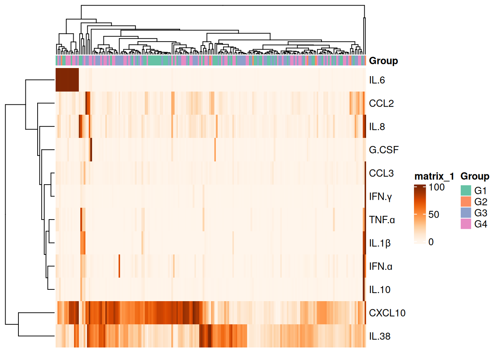
2.3. Improve Figure 2 of the publication
Add a second annotation with information of death and a third one with information of gender
death <- clinical_data[, c(1,18)]
# gender <- clinical_data[, c(1, 3)]
final_data_2$ID <- rownames(final_data_2)
final_data_2 <- final_data_2[, -2]
final_data_2 <- merge(final_data_2, death, by = "ID")
final_data_2$Death <- factor(final_data_2$Death, levels = c(0, 1), labels = c("Alive", "Dead"))
final_data_2_heatmap <- as.matrix(final_data_2[, -which(names(final_data_2) == "Death")])
final_data_2_heatmap <- final_data_2_heatmap[, - c(1,2)]
non_numeric_data <- final_data_2[, !sapply(final_data_2, is.numeric)]
orange_palette <- brewer.pal(9, "Oranges")
group_colors <- c("Alive" = "blue", "Dead" = "red")
pheatmap(t(final_data_2_heatmap),
cluster_rows = TRUE,
cluster_cols = TRUE,
show_rownames = TRUE,
show_colnames = FALSE,
color = orange_palette,
annotation_col = non_numeric_data[, "Death", drop = FALSE],
annotation_colors = list(Dead = group_colors),
legend = TRUE,
)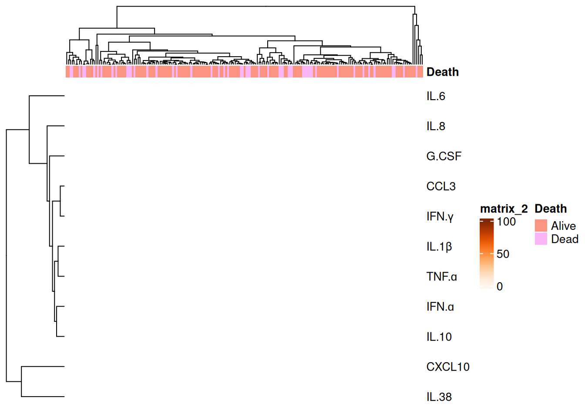
We are not sure why the colors don’t show in this graph. I apologize because I didn’t have time to finish the second grap.
session info
R version 4.4.3 (2025-02-28) Platform: x86_64-pc-linux-gnu Running under: Ubuntu 24.04.2 LTS
Matrix products: default BLAS: /usr/lib/x86_64-linux-gnu/blas/libblas.so.3.12.0 LAPACK: /usr/lib/x86_64-linux-gnu/lapack/liblapack.so.3.12.0
locale: [1] LC_CTYPE=en_US.UTF-8 LC_NUMERIC=C
[3] LC_TIME=en_US.UTF-8 LC_COLLATE=en_US.UTF-8
[5] LC_MONETARY=en_US.UTF-8 LC_MESSAGES=en_US.UTF-8
[7] LC_PAPER=en_US.UTF-8 LC_NAME=C
[9] LC_ADDRESS=C LC_TELEPHONE=C
[11] LC_MEASUREMENT=en_US.UTF-8 LC_IDENTIFICATION=C
time zone: Europe/Madrid tzcode source: system (glibc)
attached base packages: [1] grid stats graphics grDevices utils datasets methods
[8] base
other attached packages: [1] RColorBrewer_1.1-3 circlize_0.4.16 tidyr_1.3.1
[4] kableExtra_1.4.0 gridExtra_2.3 ComplexHeatmap_2.22.0 [7] readxl_1.4.5 pheatmap_1.0.12 ggfortify_0.4.17
[10] interactions_1.2.0 corrplot_0.95 GGally_2.2.1
[13] ggridges_0.5.6 ggplot2_3.5.1 mice_3.17.0
[16] fauxnaif_0.7.1 dplyr_1.1.4
loaded via a namespace (and not attached): [1] Rdpack_2.6.3 rlang_1.1.5 magrittr_2.0.3
[4] clue_0.3-66 GetoptLong_1.0.5 furrr_0.3.1
[7] matrixStats_1.5.0 compiler_4.4.3 png_0.1-8
[10] systemfonts_1.2.1 vctrs_0.6.5 stringr_1.5.1
[13] pkgconfig_2.0.3 shape_1.4.6.1 crayon_1.5.3
[16] fastmap_1.2.0 backports_1.5.0 labeling_0.4.3
[19] utf8_1.2.4 pander_0.6.6 rmarkdown_2.29
[22] nloptr_2.2.1 purrr_1.0.4 xfun_0.51
[25] glmnet_4.1-8 jomo_2.7-6 jsonlite_1.9.1
[28] pan_1.9 broom_1.0.7 parallel_4.4.3
[31] cluster_2.1.8 R6_2.6.1 stringi_1.8.4
[34] parallelly_1.42.0 boot_1.3-31 rpart_4.1.24
[37] cellranger_1.1.0 Rcpp_1.0.14 iterators_1.0.14
[40] knitr_1.50 IRanges_2.40.1 Matrix_1.7-2
[43] splines_4.4.3 nnet_7.3-20 tidyselect_1.2.1
[46] rstudioapi_0.17.1 yaml_2.3.10 doParallel_1.0.17
[49] codetools_0.2-20 listenv_0.9.1 lattice_0.22-5
[52] tibble_3.2.1 plyr_1.8.9 withr_3.0.2
[55] evaluate_1.0.3 future_1.34.0 survival_3.8-3
[58] ggstats_0.9.0 isoband_0.2.7 xml2_1.3.8
[61] jtools_2.3.0 pillar_1.10.1 foreach_1.5.2
[64] stats4_4.4.3 reformulas_0.4.0 generics_0.1.3
[67] S4Vectors_0.44.0 munsell_0.5.1 scales_1.3.0
[70] minqa_1.2.8 globals_0.16.3 glue_1.8.0
[73] tools_4.4.3 lme4_1.1-36 forcats_1.0.0
[76] rbibutils_2.3 colorspace_2.1-1 nlme_3.1-167
[79] cli_3.6.4 viridisLite_0.4.2 svglite_2.1.3
[82] gtable_0.3.6 broom.mixed_0.2.9.6 digest_0.6.37
[85] BiocGenerics_0.52.0 rjson_0.2.23 htmlwidgets_1.6.4
[88] farver_2.1.2 htmltools_0.5.8.1 lifecycle_1.0.4
[91] GlobalOptions_0.1.2 mitml_0.4-5 MASS_7.3-65